1. ¿Cuándo existe posibilidad de realizar una MTD?
sí con empresa instaladora.
MF1180_3 · Unidad didáctica 1
Organización y gestión del montaje de las instalaciones eléctricas en el entorno de edificios y con fines especiales.
Esta unidad reúne la documentación, normativa y criterios técnicos necesarios para organizar el montaje de instalaciones eléctricas en edificios y locales con fines especiales.
Los proyectos técnicos son documentos redactados por un técnico competente en la materia y por tanto con atribuciones oficialmente reconocidas para la realización de una obra, en nuestro caso de índole eléctrica. La obligación de la realización de un proyecto viene determinada por la normativa asociada así como la propia interpretación de las Administraciones competentes.
La norma general de aplicación para la realización de instalaciones eléctrica en España es el “Reglamento Electrotécnico de Baja Tensión”, en adelante REBT, el cual fue publicado en el año 2002 en BOE nº224 de fecha 18 de septiembre de 2002 (Real Decreto 842/2002), y es de aplicación obligatoria desde el 18 septiembre 2003. Este documento principal ha sufrido algunas modificaciones y cambios, los cuales iremos comentando en puntos posteriores.
Una de las principales diferencias de esta Norma que sustituyó al anterior Reglamento Electrotécnico de Baja Tensión de 1973, es la utilización de Normas de Referencia (UNE), y el hecho de estar estructurado a través de artículos e Instrucciones Técnicas Complementarias.
Las Instrucciones Técnicas Complementarias, en adelante ITC o ITCs, persiguen ayudar a los técnicos e instaladores de electricidad a encontrar mejor estructurado en forma modular cada una de las partes que interesan a la aplicación práctica que nos ocupe en cada momento.
Además estas normas utilizan normas de referencia.
Por ejemplo, a la primera pregunta que nos surge:
¿Qué intervenciones requerirán de proyecto técnico?
Nuestra búsqueda entre las ITC incluidas en el REBT nos dirigirá a la ITC- BT-04 denominada: Documentación y puesta en servicio de las instalaciones” Donde podremos encontrar en el punto 2:
“Las instalaciones en el ámbito de aplicación de este Reglamento deben ejecutarse sobre la base de una documentación técnica que, en función de su importancia, deberá adoptar una de las siguientes modalidades:
Por tanto, cualquier instalación eléctrica a ejecutar que se encuentre dentro del ámbito de aplicación del REBT tendrá que disponer o bien de un Proyecto o bien de una Memoria Técnica de Diseño, las cuales habrán de haberse redactado antes del inicio de los trabajos.
Tanto unas como otras pueden ir acompañadas de anexos que en general serán anexos de cálculo, documentos de fabricantes, etc.
La Legislación española distingue dos tipos de memoria: memoria descriptiva incluida en un proyecto y MTD memoria técnica de diseño siendo obligatorias sólo una de ellas en función de la instalación.
Por tanto, para nuestro interés en esta unidad formativa podremos contar con que:
Toda ejecución de obras eléctricas en la edificación ha de contar previamente a su intervención con un Proyecto o con una Memoria Técnica de Diseño, sobre las cuales podremos estudiar y calcular las necesidades de la obra.
Con qué tipo de documento y por tanto con qué información contaremos vendrá determinado en función de la importancia de la obra. Para clasificar este importancia relativa de la intervención y cuál será la obligación atenderemos a la siguiente tabla 3.1 del Reglamento que nos muestra a partir de qué potencia instalada será necesaria la realización de un proyecto completo.
La tabla 3.1 del REBT establece los límites para determinar si procede proyecto técnico o Memoria Técnica de Diseño (MTD).
| Grupo | Tipo de instalación | Límites |
|---|---|---|
| A | Las correspondientes a industrias, en general. | P > 20 kW |
| B | Locales húmedos, polvorientos o con riesgo de corrosión; bombas de extracción o elevación de agua, sean industriales o no. | P > 10 kW |
| C | Locales mojados; generadores y convertidores; conductores aislados para caldeo, excluyendo las de viviendas. | P > 10 kW |
| D | Instalaciones de carácter temporal para alimentación de maquinaria de obras en construcción y de carácter temporal en locales o emplazamientos abiertos. | P > 50 kW |
| E | Edificios destinados principalmente a viviendas, locales comerciales y oficinas que no tengan la consideración de locales de pública concurrencia, en edificación vertical u horizontal. | P > 100 kW por caja general de protección |
| F | Las correspondientes a viviendas unifamiliares. | P > 50 kW |
| G | Garajes que requieren ventilación forzada. | Cualquiera que sea su ocupación |
| h | Garajes que disponen de ventilación natural. | Más de 5 plazas de estacionamiento |
| i | Las correspondientes a locales de pública concurrencia. | Sin límite |
| j | Líneas de baja tensión con apoyos comunes con las de alta tensión; máquinas de elevación y transporte; instalaciones que utilicen tensiones especiales; rótulos luminosos salvo los considerados de baja tensión según ITC-BT-44; cercas eléctricas; redes aéreas o subterráneas de distribución. | Sin límite de potencia |
| k | Instalaciones de alumbrado exterior. | P > 5 kW |
| l | Locales con riesgo de incendio o explosión, excepto garajes. | Sin límite |
| m | Quirófanos y salas de intervención. | Sin límite |
| n | Piscinas y fuentes. | P > 5 kW |
| o | Todas aquellas que, no estando comprendidas en los grupos anteriores, determine el Ministerio de Ciencia y Tecnología mediante la oportuna disposición. | Según corresponda |
En cuanto a proyectos de modificaciones o ampliaciones de instalaciones existentes previamente se debe tener en cuenta los siguientes aspectos para determinar qué tipo de documento debe realizarse:
Si una instalación está comprendida en más de un grupo de los especificados en 3.1, se le aplicará el criterio más exigente de los establecidos para dichos grupos.
Instalaciones que requieren memoria técnica de diseño. (MTD) Requerirán Memoria Técnica de Diseño todas las instalaciones - sean nuevas, ampliaciones o modificaciones - no incluidas en los grupos indicados en los apartados anteriores.
Ejemplo:
Si en una zona común de una urbanización con instalación de alumbrado exterior de 4kW se va a realizar una ampliación de alumbrado exterior de 1,5 kW para aumentar el alumbrado, ¿Requerirá proyecto técnico la instalación?
Solución: sí, dado que aunque la ampliación en sí no supera el requisito del punto k para alumbrado exterior de 5kW, la suma del alumbrado existente más la ampliación sí supera esta potencia, por lo que atendiendo al requisito b para ampliaciones se requerirá proyecto técnico.
“b. Las ampliaciones de las instalaciones que, siendo de los tipos señalados en la tabla 3.1 no alcanzasen los límites de potencia prevista establecidos para las mismas, pero que los superan al producirse la ampliación”
Contenidos de las memorias según tipo de instalación:
Proyecto: Cuando se precise proyecto deberá ser redactado y firmado por técnico titulado competente, quien será directamente responsable de que el mismo se adapte a las disposiciones reglamentarias y quien interpretará qué aplicación tiene cada requisito al proyecto que ocupa. El proyecto de instalación se desarrollará, bien como parte del proyecto general del edificio, bien en forma de uno o varios proyectos específicos generalmente conocidos como separata de electricidad del proyecto del edificio.
En la memoria del proyecto se expresarán especialmente:
Cuando hablamos de proyecto técnico se entiende que la estructura será aquella con el siguiente contenido:
Memoria descriptiva: que incluirá los puntos a, b, c, e, de modo descriptivo en texto, debiendo aportar la misma descripción suficiente justificativa de porqué se deciden estos contenidos mínimos, y cómo se han alcanzado los
valores. Los cálculos justificativos de diseño pueden incluirse dentro de este documento o como anexo aparte.
Anexos a la memoria deberán existir típicamente el resto de documentos de un proyecto técnico: Planos y esquemas, mediciones y presupuesto de proyecto, y pliego de condiciones. Sin embargo, a tenor de los documentos requeridos en el REBT, las mediciones y presupuesto de proyecto y el pliego de condiciones no tiene porqué incluirse entre los documentos necesarios para la autorización de la instalación, por lo que si existe separata eléctrica de un proyecto mayor se posible que se dé el hecho que las mediciones y presupuesto y pliego de condiciones no formen parte de esta separata sino del proyecto de ejecución del edificio. Esto último dependería de la exigencia o no de la Administración que va a autorizar la instalación.
Separata de electricidad: son una parte separada de documentos eléctricos de un proyecto de un edificio. Incluyen sólo parte de los documentos del proyecto original de un edificio, habitualmente memoria descriptiva, anexos de cálculo y planos de electricidad del proyecto original.
Por tanto de esta serie de datos que deben constar las memorias y de cara a la preparación del aprovisionamiento se extraerán de la memoria los siguientes datos:
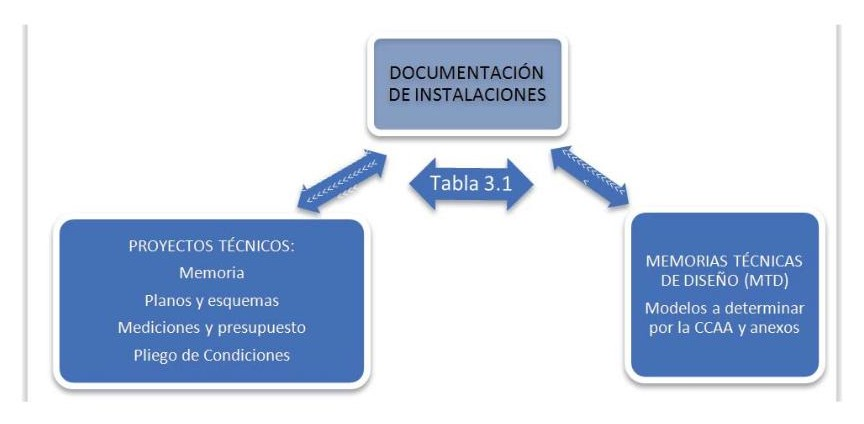
para que se ponga de manifiesto el cumplimiento de las prescripciones del Reglamento y sus Instrucciones Técnicas Complementarias. Extraeremos de aquí las características a cumplir por lo elementos a incorporan, como puedan ser características de protecciones, curvas de respuesta, detalles de requisitos, etc.
Los planos serán los suficientes en número y detalle, tanto para dar una idea clara de las disposiciones que pretenden adoptarse en las instalaciones, como para que la Empresa instaladora que ejecute la instalación disponga de todos los datos necesarios para la realización de la misma. Tal y como la propia señalización de la norma indica, los planos deben contener toda la información necesaria para el instalador, si bien determinadas características más precisas no siempre se reflejan el planos.
Proyectos y MTD como documentación de instalaciones.
Memorias técnicas de diseño (MTD): Las memorias técnicas de diseño son documentos simplificados de los proyectos técnicos que tienen por objetivo simplificar los requisitos así como agilizar la autorización de instalaciones de menor entidad a las que requieren proyecto.
Para las Memorias técnicas de diseño, la normativa recoge:
“… se redactará sobre impresos, según modelo determinado por el Órgano competente de la Comunidad Autónoma, con objeto de proporcionar los principales datos y características de diseño de las instalaciones. El instalador autorizado para la categoría de la instalación correspondiente o el técnico titulado competente que firme dicha Memoria será directamente responsable de que la misma se adapte a las exigencias reglamentarias.”
Por tanto, el contenido de una memoria técnica de diseño dependerá de la Comunidad Autónoma en que nos encontremos, siendo éstas las que deban proporcionar el modelo. No obstante se mencionan en el REBT los siguientes datos/requisitos como lista no necesariamente exhaustiva:
En el territorio nacional español cada Comunidad Autónoma determinará el modelo a emplear y requisitos necesarios para la autorización de ejecución de una instalación destinada a realizarse mediante el procedimiento simplificado de Memorias Técnicas de Diseño.
De ellas podemos obtener la siguiente información para nuestro proyecto:
A diferencia de las instalaciones que requieren proyecto, las MTD en general no nos dan valores exactos de medición de la obra, aunque como veremos más adelante para la mayoría de intervenciones nos veremos en la obligación de realizar nuestra propia medición de obra.
Todo proyecto eléctrico debe incluir planos y esquemas de la instalación a realizar. En las MTD suele ser suficiente aportar un croquis.
El propósito de estos documentos es proporcionar información sobre el diseño seleccionado para la instalación eléctrica a ejecutar, resultando suficiente para facilitar su análisis, ayudar a elaborar su estudio y posibilitar su futura construcción y mantenimiento.
Aunque el objetivo de estos tres tipos de documentos es el mismo se diferencian fundamentalmente en el enfoque y el alcance que cada uno de ellos debe tener. Por tanto en función de la importancia de la instalación se hace necesaria la realización de uno o varios de ellos siempre dentro de que cum-
plan su función mínima de determinar de forma inequívoca el desarrollo final de la instalación que se promueve.
Esta representación se guía por normas fijas y preestablecidas para poder describir de forma exacta y clara, dimensiones, formas, características y la construcción de lo que se quiere reproducir.
Como norma general tanto planos como el resto de documentos deben cumplir con los objetivos siguientes:
caracteres igual a dos veces el ancho de línea empleado para la escritura.
A continuación definimos cada uno de los conceptos y la diferencia existente entre ellos para planos, esquemas y croquis. No obstante primero definiremos someramente los tres conceptos:
Plano: Representación esquemática detallada con acotaciones y leyendas, en dos dimensiones y a determinada escala de una construcción, instalación, etc.
Esquema: Representación gráfica simbólica de cosas materiales o inmateriales.
Croquis: Diseño ligero sin precisión ni detalles de un edificio o instalación que se hace sin valerse de figuras geométricas ni necesariamente a escala para representar conceptos, edificios y elementos de ellos.
Los planos son representaciones en papel o soporte informático del detalle de una instalación en nuestro caso eléctrica. Los planos, a diferencia de esquemas y croquis son representaciones a escala que deben indicar trazado y posición de objetos reales sobre la base de un plano también a escala del edificio donde deben ser instalados.
Habitualmente los planos eléctricos se representan en 2 dimensiones 2D, como vistas en planta, alzado y/o sección trazadas sobre planos del edificio en que se trabaja. Sin embargo en los últimos tiempos y con el avance del desarrollo de los programas de diseño gráfico en 3D cada vez es más común encontrarnos con otras representaciones 3D en papel como perspectiva o axonometría.
Los planos se pueden dividir en planos generales, aquellos que muestran normalmente en planta, alzado y sección los aspectos generales del proyecto como trayectos de líneas, ubicación de elementos, etc. Y en planos de detalle que se incorporan para clarificar en escalas mayores a los planos generales aquellas zonas que por imposibilidad puedan suscitar discrepancias o indefiniciones en los planos generales. La necesidad o no de realizar planos de detalle suele ser decisión del propio redactor del proyecto aunque en ocasiones resulta una exigencia de la Administración que supervisa y aprueba el proyecto, compañía suministradora u otros agentes intervinientes en el proceso de aprobación de la instalación.
En España la normativa relativa a la normalización sobre planos puede encontrarse en la UNE-EN ISO 3098 relativa al dibujo técnico. La normalización del dibujo técnico se define como el conjunto de condiciones o normas que regulan todos los elementos que intervienen en las representaciones gráficas.
A través de la normalización se regulan los tamaños del papel sobre los que dibujamos (formatos), las escalas, las líneas y sus tipos, las formas de acotar, las representaciones abreviadas, etc. De esta forma cualquier persona, con independencia del país de origen y del idioma que hable, es capaz de interpretar los dibujos técnicos realizados en cualquier parte del mundo si éstos se han elaborado siguiendo las normas establecidas.
Las normas generales más importantes que se en encuentran normalizadas son por tanto:
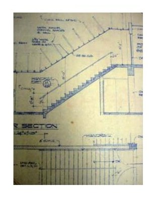
Plano ejemplo de una sección.
Los planos deben adaptarse a los formatos normalizados por la serie A DIN que responde a las siguientes dimensiones y nomenclaturas:
Formatos Serie A DIN.
| Formato | Dimensión en eje X | Dimensión en eje Y |
|---|---|---|
| A0 | 841 mm | 1189 mm |
| A1 | 594 mm | 841 mm |
| A2 | 420 mm | 594 mm |
| A3 | 297 mm | 420 mm |
| A4 | 210 mm | 297 mm |
| A5 | 148 mm | 210 mm |
| A6 | 105 mm | 148 mm |
| A7 | 74 mm | 105 mm |
| A8 | 52 mm | 74 mm |
| A9 | 37 mm | 52 mm |
| A10 | 26 mm | 37 mm |
Cumplen todos ellos la característica de tener tamaño doble al anterior, de modo que se facilita el plegado posterior de los mismos.
Se ha establecido un formato base, denominado A0, a partir del cual se obtienen las dimensiones de los restantes formatos. Este formato base es una hoja rectangular de 1 m2 de superficie, siendo √2 la relación entre la longitud de sus lados. Según estas condiciones, resulta un formato de dimensiones 1189x841 mm.
Para obtener el formato inmediato inferior se divide el formato A0 por la mitad del lado de mayor longitud. El nuevo formato así obtenido es una hoja rectangular de ½ m2 de superficie, siendo √2 la relación entre la longitud de sus lados. Este formato se denomina A1 y tiene unas dimensiones de 594x841 mm.
Dividiendo el formato A1 por la mitad de su lado de mayor longitud se obtiene el formato inmediato inferior, denominado A2; y así sucesivamente, siguiendo este proceso se van obteniendo los restantes formatos hasta llegar al formato más pequeño, denominado A4.
Todos los formatos tienen una característica en común: son hojas rectangulares semejantes cuyos lados están en relación √2.
Formatos normalizados serie A.
Líneas y acotación:
Líneas que definen en dibujo: Las líneas que definen el dibujo son principalmente de dos tipos:
Atendiendo a su función dentro del dibujo podemos denominar los siguientes tipos de línea:
Planos de detalle a escala y acotados.
Las escalas se encuentran también normalizadas. Las escalas de los proyectos de instalaciones en el ámbito de edificios son del tipo escalas de reducción. Se define la escala como:
Cálculo de escala
e=(Escala del dibujo)/(Escala real del objeto)
Las escalas normalizadas se muestran en el siguiente cuadro:
ESCALA NATURAL 1:1
ESCALAS DE REDUCCION NORMALIZADAS
1:2
1:20
1:200
1:2000
1:5
1:50
1:500
1:5000
1:10
1:100
1:1000
1:10000
Obviamente la escala natural es prácticamente inútil en el caso de dibujos de instalaciones eléctricas. Las escalas habituales en edificación suelen ser: 1/20, 1/50 1/100 para planos de detalles y en función del tamaño del edificio podemos encontrarnos 1/100, 1/200, 1/500, 1/1000; etc.
El uso de escalas no normalizadas como 1/250, 1/300 no se recomienda dado que están fuera de la normalización. Para realizar las medidas sobre planos pueden emplearse escalímetros o cuadros de escalas.
Si la medida principal en planta de un edificio es de 81 m de largo y 23 de ancho y nos exigen que el plano a escala de reducción sea como máximo de 1:100 ¿qué formato de papel mínimo permitirá incluir en el toda la planta del edificio?
Solución: calculamos e = 0,01 (1/100). Multiplicamos este valor por el largo del edificio en mm 81.000 mm y nos da como resultado 810 mm. Por tanto tendremos que emplear como mínimo un formato A1 para poder incluir toda la longitud del edificio cumpliendo la escala. En el siguiente paso verificamos la medida de anchura e=0,01 * 23.000 mm= 230 mm, por lo que sobrará espacio en vertical para otras partes del plano, leyendas, etc.
Los esquemas son representaciones de la estructura de una instalación mediante representación por símbolos y diagramas de los diferentes elementos. A diferencia de los planos los esquemas no tienen que seguir una escala en el dibujo por tanto no está representados sobre planos de base de los edificios sino tan sólo responden a la estructura de la instalación y como se conecta, sus elementos y derivaciones, etc.
Su necesidad se debe a que en los planos a escala sobre la referencia de los edificios la verdadera estructura de la instalación es de muy difícil interpretación ya que los puntos en los que la instalación se deriva en varias ramas (cuadros generales, centralización de contadores, etc.) resultarían ilegibles en escala real sobre el edificio. Dado que el interés de la instalación en estos puntos y que las derivaciones de los diferentes circuitos no es interpretable en los planos generales se comenzaron a realizar este tipo de esquemas a todos los proyectos.
Existen dos tipos de esquemas según el si las líneas son representadas con todas sus líneas o de forma compacta.
Esquema unifilar de la instalación: Es el más utilizado por la simplicidad que ofrece en el dibujo respecto al multifilar. En él las líneas y elementos se representan en una sola línea indicándose esquemáticamente el número de líneas en paralelo a instalar en la realidad.
Esquema multifilar de la instalación: En el esquema multifilar se representan de forma real el número de conductores que viajan en cada trayecto en paralelo unos a otros.
Sobre ambos existe normalización y habitualmente se emplea esta para su representación, si bien en determinados casos también se representan simplificaciones comprensibles de las mismas.
Representación parte de las líneas de esquema unifilar frente a multifilar.
Los croquis son representaciones gráficas de las instalaciones. A diferencia de los planos no tienen que estar representados en escala real sino que pueden resultar una representación gráfica de los trayectos de la instalación sobre croquizados sencillos del edificio.
Como hemos visto los croquis no necesariamente cumplen los requisitos de normalización, acotación y detalle, ni tampoco necesariamente la escala, más bien son una representación en forma de idea donde es suficiente que cumplan el objetivo de ofrecer la representación de un modelo que ilustra o hace entender correctamente los trayectos reales a cumplir.
Un croquis es una representación gráfica simbólica no sometido por tanto a normas de trazado ni escalas mientras éstas resulten comprensibles.
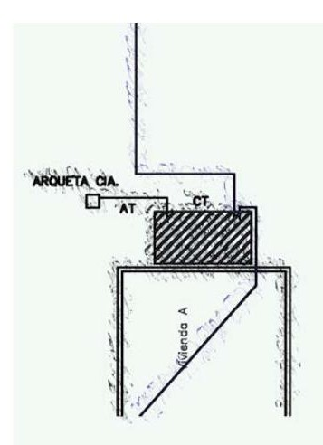
Los croquis pueden servirnos para acompañar a documentos como MTD que por su naturaleza no tienen porqué tener un alcance tan complejo como los planos, que pueden cumplir la función de comprensión de por un ejemplo la zona de trazado de una línea de forma más sencilla de representar.
De hecho muchas veces los croquis se realizan a mano alzada.
Croquis de situación de CT y líneas AT/BT
En las memorias técnicas de diseño se encuentran datos generales de las instalaciones, que si bien no son completas como para realizar todos los cálculos de aprovisionamiento y análisis de la instalación, si debemos aportar para poder realizar la documentación administrativa relativa a su aprobación y posterior autorización de puesta en marcha tanto por la Administración Competente como posteriormente por la compañía distribuidora que opere en la zona en la que se encuentre nuestro edificio.
Dado que en el caso español la organización territorial delegó las competencias en materia de autorización de instalaciones y autorización de instaladores a las Comunidades Autónomas el contenido de las memorias no es idéntico en todo el territorio, sino que depende de la Comunidad en que se sitúe la instalación.
La tendencia actual es a que la entrega y registro de las instalaciones eléctricas se realice por métodos informatizados. No obstante siguen estando disponibles normalmente los modelos de autorización.
Puede darse el caso en que la comunidad posea un procedimiento digital y no un modelo para memorias técnicas de diseño. En estos casos se estará al menos a lo previsto en el apartado mencionado de Reglamento electrotécnico de Baja Tensión, y se asegurará el contenido mínimo necesario para la comprensión correcta de la memoria desde el punto de vista de la realización posterior de la instalación así como el que la MTD contenga todos los datos necesarios para el modelo de registro de inscripción de las instalaciones de la comunidad en cuestión.
En cuanto a la redacción de las memorias técnicas de diseño no existe la obligación expresa de que hayan de ser realizadas por un técnico competente titulado para ello, ya que pueden ser realizadas por el personal de la empresas instaladoras homologadas por la comunidad donde se opera, En cualquier caso el firmante se presupone que sí deberá cumplir lo establecido en la ITC- BT-03 para autorización de instaladores en la comunidad concreta donde se realiza la instalación y así mismo cumplirá con la categoría de cualificación individual que en la misma ITC-BT-03 específica, tanto el firmante como la empresa instaladora a la que representa. La homologación de las empresas instaladoras se realiza también por cada Comunidad Autónoma y los requisitos se encuentran igualmente recogidos en la ITC-BT-03.
Para saber más, consulta el ejemplo de modelo para rellenar la MTD de instalaciones en este caso para la Comunidad Autónoma de Madrid, en el anexo al final del libro.
En el ejemplo visualizado para la comunidad de Madrid (similar al de otras comunidades) la estructura de la MTD es la siguiente.
Titular
En esta parte debe especificarse el agente posteriormente titular de la instalación una vez se haya concluido la obra. No necesariamente tienen que coincidir con la empresa o persona que promueve la obra, de ahí que debe existir un documento de autorización de parte del titular de la instalación al instalador para que pueda tramitarse la posterior autorización de la instalación.
Emplazamiento de la instalación
Será la dirección física de la instalación, incluido el uso al que se pretende destinar. La clasificación habitual en que dividimos los usos de las instalaciones en las MTD son los siguientes:
El resto de casos no suele ser posible realizarlos como MTD, por ejemplo aquellos que tengan categoría de locales de pública concurrencia, que serán tratados siempre como proyectos técnicos.
Características generales de la instalación
Datos técnicos
instalación. La definición solo existe en la norma para el caso de viviendas y en el punto de cálculo de cargas se verán los detalles de su cálculo. En general se indicará grado de electrificación básico para todas aquellas instalaciones donde la potencia admisible por vivienda sea menor de 9.200 W.
Grado de electrificación básico viviendas: Es la necesaria para la cobertura de las necesidades de utilización primarias sin necesidad de obras posteriores de adecuación. Debe permitir la utilización de los aparatos eléctricos de uso común en una vivienda.
En el caso de viviendas de grado de electrificación básica, la norma prevé los siguientes circuitos interiores en la vivienda:
Circuitos independientes:
C1 Circuito de distribución interna, destinado a alimentar los puntos de ilumi-
nación.
C2 Circuito de distribución interna, destinado a tomas de corriente de uso
general y frigorífico.
C3 Circuito de distribución interna, destinado a alimentar la cocina y horno.
C4 Circuito de distribución interna, destinado a alimentar la lavadora, lavavaji-
llas y termo eléctrico.
C5 Circuito de distribución interna, destinado a alimentar tomas de corriente de
los cuartos de baño, así como las bases auxiliares del cuarto de cocina.
Grado de electrificación elevado: Es el caso de viviendas con una previsión importante de aparatos electrodomésticos que obligue a instalar más de un circuito de los previstos en la electrificación básica, así como con previsión de sistemas de calefacción eléctrica, acondicionamiento de aire, automatización, gestión técnica de la energía y seguridad o con superficies útiles de las viviendas superiores a 160 m2.
En este caso de grado de electrificación elevada se instalarán, además de los correspondientes a la electrificación básica, los siguientes circuitos:
C6 Circuito adicional del tipo C1, por cada 30 puntos de luz.
C7 Circuito adicional del tipo C2, por cada 20 tomas de corriente de uso
general o si la superficie útil de la vivienda es mayor de 160 m2.
C8 Circuito de distribución interna, destinado a la instalación de calefacción
eléctrica, cuando existe previsión de ésta.
C9 Circuito de distribución interna, destinado a la instalación aire acondicio-
nado, cuando existe previsión de éste.
C10 Circuito de distribución interna, destinado a la instalación de una secadora
independiente.
C11 Circuito de distribución interna, destinado a la alimentación del sistema
de automatización, gestión técnica de la energía y de seguridad, cuando exista previsión de éste.
C12 Circuitos adicionales de cualquiera de los tipos C3 o C4, cuando se pre-
vean, o circuito adicional del tipo C5, cuando su número de tomas de corriente exceda de 6.
Dado que para el caso de otros usos diferentes al de viviendas no se encuentran definidos los conceptos de grado de electrificación elevada o básica, no aplicará el dato en casos de usos comerciales o industriales, garajes…
Memoria por
Aquí se introducirá el motivo por el que se realiza la MTD que puede ser:
N (Nuevo): serán nuevas todas aquellas instalaciones donde la instalación no existiera previamente.
A (Ampliación-Reforma): En el caso de la memoria técnica de diseño no se distingue entre ampliaciones o reformas (modificaciones) aunque en el momento de su registro si serán de tratamiento diferente.
CN (Cambio Nombre): Dado que las instalaciones se registran a nombre de un titular, en aquellos casos en que el titular haya cambiado la Administración competente puede exigir la redacción de una memoria técnica para el cambio de nombre de la instalación a un nuevo titular.
CT (Cambio Tensión): Se da un cambio de tensión cada vez que el punto de suministro cambia la tensión de su suministro. En general suelen darse cuando una instalación de 230 V amplia a 400V (monofásica a trifásica), aunque existen otros casos especiales como por ejemplo alumbrados antiguos que trabajaban a tensiones menores y se readaptan.
Uso de la instalación: en general será el uso declarado anteriormente entre viviendas, servicios generales, garaje, oficina, local comercial o sector industrial. Indicar que el cambio de uso de un local que implique alguna modificación para el cumplimiento del REBT requeriría una nueva MTD.
Acometida
Parte de la instalación de la red de distribución, que alimenta la caja o cajas generales de protección o unidad funcional equivalente (en adelante CGP).
CGP: Son las cajas de conexión destinadas a contener los elementos de protección (fusibles) de las líneas generales de alimentación (En adelante LGA).
Esquema simplificado de conexión de suministro:
La acometida por tanto es la línea eléctrica que conecta desde el punto de suministro que la compañía nos otorga hasta la Caja General de Protección de la Vivienda, local o edificio.
Punto de conexión: El punto de conexión es el punto que nos otorga la compañía distribuidora para realizar el enganche de nuestro suministro. En el caso de las MTD dado que sólo se utilizan para conexiones en Baja Tensión pueden ser de dos tipos.
A continuación se muestran los esquemas de conexión a Centro de Transformación y a red de distribución:
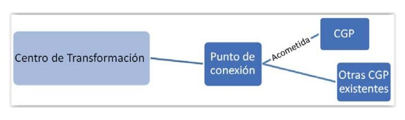
Punto de conexión a Centro de transformación
Punto de conexión a red de suministro
Tipo de conexión: Los tipos de conexión que pueden darse se clasifican según sean:
Sección: Será la sección en mm2 del conductor empleado en la acometida. En los casos típicos para redes de distribución se emplearán 95 mm2, 120mm2, 240 mm2.
Material: Se seleccionará el material del conductor empleado en la acometida. En la actualidad la mayoría acometidas se realizan en aluminio dado que para conductores de cierta entidad la rentabilidad económica del aluminio es mayor que la del cobre, aunque existen casos en que puede emplearse cobre.
CGP
Tipo: Se seleccionará el tipo de CGP en función de que esta sea una CGP estándar o en el caso de que sea una caja de conexiones de protección y medida. Este último caso puede darse por ejemplo en cajas posadas en fachada para alimentar una sola vivienda o un contrato provisional de obras o similar. Las cajas de conexiones de protección y medida cumplen la misma función que una CGP solo que suelen ser de menor entidad que éstas y pueden estar incorporadas dentro del mismo módulo con los elementos de medida. Todo ello, tanto la CGP como la posibilidad de incluir en el mismo elemento todo a través de cajas de protección y medida debe estar aprobado previamente por la compañía suministradora.
Concretamente la normativa recoge:
“..Para el caso de suministros para un único usuario o dos usuarios alimentados desde el mismo lugar conforme a los esquemas 2.1 y 2.2.1 de la Instrucción ITC-BT-12, al no existir línea general de alimentación, podrá simplificarse la instalación colocando en un único elemento, la caja general de protección y el equipo de medida; dicho elemento se denominará caja de protección y medida.”
In base: Será la intensidad nominal de las CGP conforma a su hoja de datos técnicos. Las cajas generales de protección deben ser además de los tipos que tenga aprobados la compañía suministradora que corresponda al suministro.
In cartucho: Será la intensidad nominal del cartucho que empleemos para proteger la línea aguas abajo del suministro lógicamente debe cumplirse que:
Requisito de In cartucho frente a In base:
In cartucho ≤ In base
Y que: In cartucho ≤ Imáx LGA
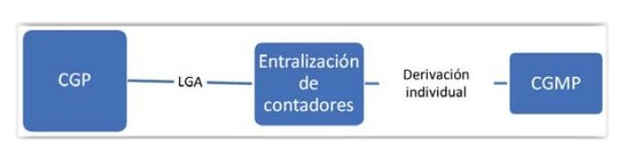
Linea general de alimentacion
LGA: La línea general de alimentación es la línea que une la CGP con la centralización de contadores o el contador.
En el caso de contadores de un único usuario o dos usuarios alimentados desde el mismo lugar se considera que no existe LGA, dado que está se encuentra sólo como un puente de corta longitud dentro de la propia caja de protección y medida.
Caso de Caja de Protección y medida (1 ó 2 ususarios)
Esquema: Caso de CGP:
LGA
Sección: será la sección en mm2 del conductor empleado en la línea general de alimentación.
Material: será el material empleado como conductor en la LGA. Habitualmente la línea general de alimentación será de Cobre, aunque en casos especiales puede emplearse aluminio.
Derivación individual: La derivación individual será la línea destinada a unir la LGA a través del contador del suministro incluido su fusible con los circuitos interiores de vivienda. Comprende también las protecciones de la Caja General de Mando y Protección del suministro.
Derivación individual (DI):
Sección: será la sección en mm2 del conductor empleado en la derivación individual.
Material: será el material empleado como conductor en la DI. Habitualmente la línea general de alimentación será de Cobre, aunque en casos especiales puede emplearse aluminio.
Interruptor general de maniobra:
IGM: El interruptor general de maniobra será aquél elemento destinado a posibilitar el corte en carga de la corriente a la entrada de la centralización de contadores.
Intensidad Nominal: Se expresará la capacidad nominal según la hoja de especificaciones técnicas del Interruptor general de maniobra expresado en Amperio (A)
Poder Corte: Se expresará el poder de corte en carga del IGM expresado en kiloamperios (kA). El poder de corte es la máxima intensidad a la cual el interruptor es capaz de cortar el suministro aguas abajo sin dañarse asegurando que dicho corte se realiza después de actuarlo. Por encima de esta cantidad de Amperios el elemento podría no realizar el corte de forma efectiva tras tratar de actuarlo. Este dato debe aparece en la hoja de características del elemento.
Nº Derivaciones Individuales: Se expresará el número de derivaciones individuales que se encuentran aguas abajo de la centralización de contadores.
Modulo de medida:
Tipo: Se distingue los siguientes tipos de módulos de medida:
Situación: atendiendo a donde están situados se distinguen tres tipos de ubicación e módulos de medida:
Protección magnetotérmica/diferencial
Interruptor General Automático: se indicará en Amperios la intensidad del interruptor general automático. Este elemento se verá en más detalle en esquemas posteriores y un elemento de corte general del cuadro de mando y protección de la vivienda. Su valor mínimo es de 25 Amperios para viviendas de grado de electrificación básica.
Interruptor Diferencial nominal (A)/ Sensibilidad (mA): Se represaran la Intensidad nominal del Diferencial instalado en la Caja General de Mando y Protección del suministro. Dado que pueden existir varios diferenciales se expresaría en su caso la suma de las intensidades nominales de los diferenciales que existan en conexión en paralelo conectados al Interruptor General Automático. En cuanto a la sensibilidad, es habitualmente de 30 miliamperios (mA) y sería este valor el expresado como sensibilidad cuando todos los interruptores diferenciales tengan esta sensibilidad. Existe disparidad de criterios entre Comunidades cuando se dan casos diferentes. En principio si existen diferenciales de diferentes sensibilidades, por ejemplo existen dos diferenciales de 30 mA y uno de 50mA, lo normal es dar el dato más desfavorable, en este caso 50 mA o expresar 30/50 mA.
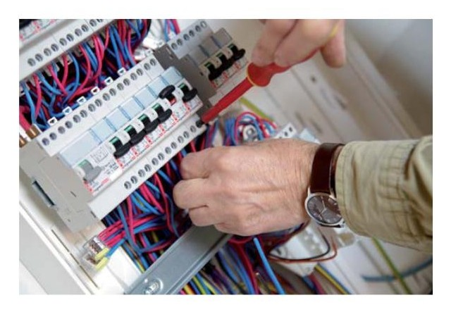
Montaje de cuadro eléctrico
Puesta a tierra
Tipos: atendiendo a la forma de los elementos empleados para tomas de tierra podemos encontrarnos la siguiente clasificación:
Picas de tierra: son las más empleadas y consisten en una barra metálica que tiene por finalidad ser hincada en el terreno y mediante abrazadera y conductor desnudo o aislado conectarse al cableado de tierra de la instalación.
Placas de tierra: se emplean de modo similar al anterior, si bien por su forma logran una mayor superficie de contacto con el terreno. Son recomendables para terrenos con conductividad baja, aunque dado que requieren una mayor complejidad para ser enterrados en el terreno tiende a emplearse menos que las anteriores.
Mallas: Se emplean cuando se requieren grandes superficies de contacto por ejemplo en el caso de subestaciones de transformación. Requieren gran superficie de contacto y por tanto grandes movimientos de tierras.
Línea de enlace: se expresará la sección en mm2 que posee el conductor desde los elementos anteriores (picas de tierra, placas o mallas) hasta la CGMP del suministro. Si el conducto posee secciones diferentes desde las
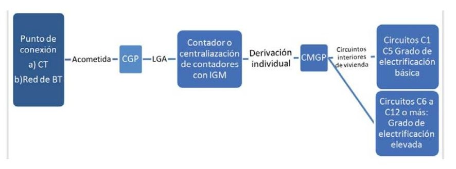
picas hasta la CGMP suele expresarse el menor de ellos por ser el más desfavorable.
Sección del conductor de protección: se expresará en mm2 la sección en mm2 seleccionada para la instalación interior del suministro.
Memoria realizada por el instalador autorizado o tecnico competente
Se rellenarán los datos de la persona responsable de la realización y diseño de la instalación, según quien haya redactado la MTD:
De este modo puede observarse que una empresa instaladora puede ser la empresa ejecutora de la instalación y también quien realice la MTD.
El resto de pasos a determinar en la MTD serán la previsión de cargas, que paseamos a ver en el punto siguiente.
Antes mostramos resumen de la instalación completa esquemáticamente:
Esquema general instalación
Instalación de enlace: es la instalación que comprende desde la Caja General de Protección hasta la Caja de Mando y Protección de la vivienda.
Es decir es la parte de la instalación que une desde el límite de propiedad de la compañía/titular hasta la Caja que protege los circuitos interiores de vivienda (CGMP), comprendiendo por tanto: CGP, LGA, Contador o Contadores y aparamenta, derivaciones individuales hasta la CGMP y la protecciones de ella.
CGMP Características de las Cajas Generales de Mando y Protección:
Dispositivos generales e individuales de mando y protección. interruptor de control de potencia.
Situación.
Los dispositivos generales de mando y protección, se situarán lo más cerca posible del punto de entrada de la derivación individual en el local o vivienda del usuario. En viviendas y en locales comerciales e industriales en los que proceda, se colocará una caja para el interruptor de control de potencia (ICP), inmediatamente antes de los demás dispositivos, en compartimento independiente y precintable. Dicha caja se podrá colocar en el mismo cuadro donde se coloquen los dispositivos generales de mando y protección.
El Interruptor de Control de Potencia ICP, es un requisito necesario para el control por parte de la compañía suministradora para asegurar que el consumo de potencia en el interior del local suministrado no excede la potencia contratada. Este es el motivo por el cual la caja en que se ubique debe ser precintable para evitar su eventual manipulación. Cuando nos indica que se colocarán en aquellos locales “que proceda” es debido a diversos motivos que pueden obviar la instalación de ICP. En el caso general en que tenemos edificios de viviendas y locales comerciales garajes etc. en que cada usuario contrata individualmente su suministro eléctrico la necesidad de instalación de caja para ICP es total. Sin embargo cuando debido a su naturaleza, por ejemplo en consumos grandes en los que la contratación asegura que el control de la potencia se realizará por otros medios como es la instalación de maxímetro, la necesidad de la caja de ICP y colocación de ICP puede ser obviado por el
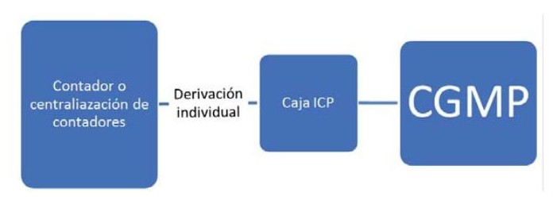
técnico redactor. Sin embargo si existe la posibilidad de contratar tanto con maxímetro como sin él, mantener la instalación de caja para ICP es necesaria.
Maxímetro: Un maxímetro o medidor de demanda es un instrumento de medición eléctrico cuya finalidad es obtener el valor máximo de la potencia eléctrica demandada durante un periodo de tiempo (normalmente el periodo de facturación de una compañía suministradora de energía eléctrica).
Además, en la actualidad la posibilidad de incorporar a cualquier contrato nuevo la regulación de potencia a través del propio contador electrónico hace que de nuevo se pueda poner en duda la necesidad de instalación de ICP. No obstante se sigue recomendando la instalación del mismo, pues los mecanismos por los que los contadores electrónicos regulan el control de la potencia y su posterior rearme pueden provocar el corte del suministro hasta rearme manual en el propio contador, cuestión que puede provocar diversas molestias a los usuarios de suministros de locales y viviendas.
Con todo esto por tanto, en general se instalará una caja homologada por la compañía en todos los suministros, ubicada justo antes de la CGMP, o integrada en ella, siempre que la compañía haya permitido su uso. En aquellos casos en que la caja esté integrada dentro de la propia CGMP habrá de ser precintable en la parte destinada a ubicar el interruptor ICP.
Ubicación de ICP anterior a CMGP:
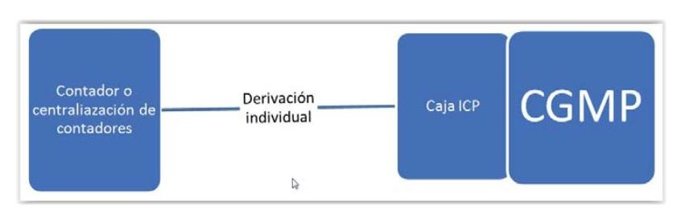
Ubicación de ICP integrada en CGMP:
CGMP
En viviendas, deberá preverse la situación de los dispositivos generales de mando y protección junto a la puerta de entrada y no podrá colocarse en dormitorios, baños, aseos, etc. En los locales destinados a actividades industriales o comerciales, deberán situarse lo más próximo posible a una puerta de entrada de éstos.
Los dispositivos individuales de mando y protección de cada uno de los circuitos, que son el origen de la instalación interior, podrán instalarse en cuadros separados y en otros lugares.
En locales de uso común o de pública concurrencia, deberán tomarse las precauciones necesarias para que los dispositivos de mando y protección no sean accesibles al público en general.
La altura a la cual se situarán los dispositivos generales e individuales de mando y protección de los circuitos, medida desde el nivel del suelo, estará comprendida entre 1,4 y 2 m, para viviendas. En locales comerciales, la altura mínima será de 1 m desde el nivel del suelo.
Composición y características de los cuadros.
Los dispositivos generales e individuales de mando y protección, cuya posición de servicio será vertical, se ubicarán en el interior de uno o varios cuadros de distribución de donde partirán los circuitos interiores.
La envolvente para el interruptor de control de potencia será precintable y sus dimensiones estarán de acuerdo con el tipo de suministro y tarifa a aplicar. Sus características y tipo corresponderán a un modelo oficialmente aprobado.
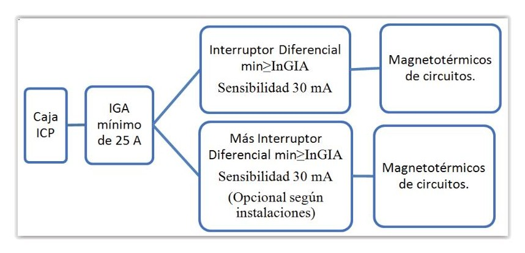
Los dispositivos generales e individuales de mando y protección serán, como mínimo:
Protección general:
Además de la protección general se instalarán protecciones a los circuitos que veremos a continuación. La estructura interior por tanto de una CGMP será:
CGMP:
Por cada cinco circuitos se instalará un diferencial, de modo que si tenemos más de cinco circuitos interiores para un suministro tendremos que instalar 2 ó más interruptores diferenciales.
A continuación estudiaremos en función de las previsiones de cargas el número de circuitos necesarios para nuestra instalación interior.
En las siguientes secciones la MTD solicita datos de las previsiones de carga por circuito. Dado que estos datos serán tratados en la siguiente sección continuaremos con el resto de elementos solicitados de las características de la instalación.
Datos técnicos de las líneas generales de alimentación
Se nos permite aquí describir más de una línea general de alimentación en previsión de que el edificio pueda instalar más de una CGP. En general esto sólo ocurrirá en caso de edificios de muchos suministros, pero en tales casos suele requerirse un proyecto en lugar de MTD (para más de 100 kW en viviendas por ejemplo según la tabla 3.1)
Potencia máxima de cálculo: es aquella que se empleó en el cálculo de la LGA o la máxima potencia que pudieran soportar las secciones instaladas para la línea.
Potencia máxima Admisible: Dado que para el cálculo de la LGA deben emplearse una serie de factores de corrección y estimarse la siguiente superior que cumpla los parámetros según UNE 20.460-5-523, la potencia máxima admisible y la de cálculo pueden resultar diferentes.
Fase/sección: sección en mm2 de los conductores de la LGA. Las secciones mínimas para las líneas generales de alimentación serán de 10 mm2 si el material del conducto fuera cobre y de 16 mm2 en el caso de aluminio. A partir de valores de 25 mm2 y superior el conductor del neutro puede ser menor que el de las fases según la siguiente tabla:
Tabla de conductores para secciones de cable/tubos de las LGA
| Sección de fase (mm²) | Sección de neutro (mm²) | Diámetro exterior del tubo (mm) |
|---|---|---|
| 10 | 10 | 75 |
| 16 | 16 | 75 |
| 25 | 25 | 110 |
| 50 | 25 | 125 |
| 95 | 50 | 140 |
| 150 | 95 | 160 |
| 240 | 150 | 200 |
Material: habitualmente las LGA son de Cobre aunque pueden realizarse también en aluminio. Debe tenerse en cuenta que ambos materiales cobre y aluminio no pueden conectarse directamente, sino que en aquél punto en que una instalación de aluminio cambie a cobre como material conductor debe ser unida a través de una placa bimetal o terminales bimetal. Para permitir el correcto mantenimiento y estado de las placas bimetal, éstas suelen estar incorporadas en las CGP. De este modo ya que las CGP suelen estar instaladas en el límite de propiedad entre vía pública y zona privada la inspección de la misma resultará más sencilla.
Aislamiento: Se seleccionará el aislamiento empleado en la LGA. El nivel de aislamiento cumplirá con una tensión asignada 0,6/1kV, además de ser no propagadores de incendio y con emisión de humos en caso de incendio reducida. Es habitual que los cables de las líneas generales se encuentren en trayectos muy próximos a las zonas comunes de los edificios, de ahí que en caso de incendio podrían afectar a la visibilidad de las salidas, de ahí la exigencia de la norma para ellos. Indicar que el caso de LGA las líneas deberán transcurrir encerradas, enterradas o en conductos cerrados pero registrables que cumplan con lo estipulado en la ITC-BT-14. Por ejemplo en el caso de que se emplearan conductos con canales protectoras la norma exige que su apertura deba realizarse con un útil.
Caída de tensión máxima en la LGA: La caída de tensión máxima permitida para la LGA será del 0,5 % en caso de que la línea alimente una única centralización de contadores. En caso de que existan centralizaciones de contadores
parciales, es decir, no se encuentren completamente centralizados, se permitirá hasta el 1% de caída de tensión.
Protección: se indicará el dato de la intensidad nominal de los cartuchos o fusibles que protegen la línea, es decir los ubicados en la CGP.
Datos técnicos punto de medida y protección
Datos de suministros: Se indicarán aquí los datos del número de suministros, así como su tipo (monofásicos, trifásicos <15 ó <ó> 43,5 kW) así como el número de cada tipo, y su ubicación o ubicaciones caso de que existan centralizaciones parciales.
Interruptor General de Maniobra: deben permitir el corte en carga de los embarrados y por tanto suministros que contenga agua abajo, por lo que el valor de Intensidad nominal y el poder de corte deben garantizar su aptitud para los suministros que contiene.
Datos técnicos derivaciones individuales
Derivaciones individuales:
Se describirán el número de derivaciones individuales y el nº de cada una de ellas. Número de tipo de cada una de ellas que será empleado posteriormente en la descripción de las protecciones de la CGMP y resto de datos técnicos definidos por sus secciones y nº de fases (1 ó 3), materiales de conductor y aislamientos. Para su caída de tensión máxima se atenderá al siguiente criterio:
Fusible de seguridad (Amperios): Se refiere al dato en amperios del fusible que protege la derivación individual aguas abajo, es decir, al que se haya empleado en la conexión del embarrado de la centralización de contadores.
Datos tecnicos dispositivos generales mando y protección
Se definirán en función de los tipos anteriores de derivaciones individuales que existan en el edificio, incluido número de fases y sección del conductor.
Se indicará a continuación el tipo de caja de ICP 29 ó 36. Los números 29 ó 36 se corresponden con el mayor diámetro interior, expresado en milímetros, de los tubos que contienen los cables de derivación individual. 29 mm corresponderá al diámetro interior de tubo de 32 mm, que es además el mínimo que puede instalarse para derivaciones individuales, y 36 se corresponde al diámetro interior de tubo de 40 mm habitualmente.
Además se definirán los datos del IGA Interruptor General de Maniobra instalado mediante su intensidad nominal en amperios y poder de corte en kiloamperios.
En el caso del interruptor diferencial nos permite la selección de sensibilidad entre 10, 30 ó 300 mA, aunque en el caso de vivienda requeriría la selección de uno de los dos primeros.
Por último definimos los tipos de montaje y sus acrónimos atendiendo a la trayectoria y sujeción elegidas para los tipos de montajes en dos clasificaciones posibles, según sean de la parte de la instalación que comprende toda la instalación interior general (1) ó los específicos permitidos de interior de vivienda (2).
Instalaciones interiores o receptoras. Sistemas de instalación.
Acrónimo Sistema de montaje
T.P. Bajo Tubo Protector
F.D.P. Fijado Directamente sobre Pared
ENTR. Enterrado
D.E.E. Directamente Empotrados en Estructura
AERO Aéreo
I.H.C. Interior Huecos de la Construcción
C.P. Bajo Canales Protectores
MOLD. Bajo moldura
BANDJ. En Bandeja
C.E.P. En Canalización Eléctrica Prefabricada
Instalaciones interiores en viviendas. Prescripciones generales de instalación.
| Acrónimo | Sistema de montaje |
|---|---|
| Acrónimo | Sistema de montaje |
| E.T.F. | Empotrado en Tubo Flexible |
| E.T.C. | Empotrado en Tubo Curvable |
| S.T.C. | Superficial en Tubo Curvable |
| S.T.R. | Superficial en Tubo rígido |
S.C.P. Superficial en Canal protector cerrado
S.C.P.F. Superficial en Canalización Prefabricada.
En toda intervención de instalaciones eléctricas que se diseña previamente al funcionamiento de la misma existe la necesidad de estimar qué cantidad de energía será necesaria en nuestra instalación es decir hacer una previsión de carga. Para ello la norma establece unos valores mínimos de previsión en función del tipo de uso de los edificios que construimos. No obstante estos serán valores mínimos por lo que si se dispone de datos sobre previsiones que superen estos valores será necesario basarse en el que más desfavorable sea, es decir el que mayor previsión de carga nos haya repercutido en la estimación.
Previsión de carga: es la suma de las cargas o potencia eléctrica que se estiman antes de una intervención eléctrica con el objetivo de determinar la carga que ese suministro va a suponer en la red de distribución y suministro.
Para los valores mínimos veremos los distintos usos que se prevén en la norma y su previsión de cargas.
Estimación de la previsión de cargas según los distintos tipos de usos:
Grado de electrificación y previsión de la potencia en las viviendas
La carga máxima por vivienda depende del grado de utilización que se desee alcanzar como ya hemos visto previamente en función de si su electrificación recomendada es de grado básico o elevado. Pretende evitarse que una vivienda una vez construida requiera de posteriores intervenciones para adaptar circuitos interiores o aumento de potencias. Debe permitir por tanto la utilización de los aparatos eléctricos de uso común en una vivienda. En el grado de electrificación básico, la potencia a instalar no será menor de 5.750 W.
Electrificación elevada: Se empleará cuando las necesidades de electrificación de las viviendas que se construyen pueden requerir un mayor grado de electrificación para una previsión futura. Es la correspondiente a viviendas con una previsión de utilización de aparatos electrodomésticos superior a la electrificación básica o con previsión de utilización de sistemas de calefac-
ción eléctrica o de acondicionamiento de aire o con superficies útiles de la vivienda superiores a 160 m2, o lógicamente con cualquier combinación de los casos anteriores.
Por tanto ejemplos de necesidad de electrificación elevada en viviendas pueden ser los siguientes:
En las viviendas con grado de electrificación elevada, la potencia a prever no será inferior a 9 200 W.
En la práctica el grado de electrificación depende de los escalones del valor que pueda instalarse para el interruptor general de automático, de modo que aunque en teoría en la electrificación básica podría instalarse cualquier valor comprendido entre 5.750 y 9200 W, en la práctica vienen determinado por los valores nominales de Intensidad que pueden tener estos elementos, así que normalmente será 5.750 W para Interruptores Generales de Corte de 25 Amperios y de 7.360 W para Interruptores Generales de Corte de 32 Amperios.
También se nos indica en la propia norma:
“El promotor, propietario o usuario del edificio fijará de acuerdo con la Empresa Suministradora la potencia a prever, la cual, para nuevas construcciones, no será inferior a 5 750 W a 230 V, en cada vivienda, independientemente de la potencia a contratar por cada usuario, que dependerá de la utilización que éste haga de la instalación eléctrica. “
En todos los casos, la potencia a prever se corresponderá con la capacidad máxima de la instalación, definida ésta por la intensidad asignada del interruptor general automático. Se muestran a continuación las distintas posibilidades generales para viviendas de electrificación básica y elevada:
Potencias de viviendas en función de la Intensidad Nominal del IGA caso 230V.
| Electrificación | Potencia prevista (W) | Intensidad nominal del IGA |
|---|---|---|
| Básica | 5.750 | 25 A |
| Básica | 7.360 | 32 A |
| Elevada | 9.200 | 40 A |
| Elevada | 11.500 | 50 A |
| Elevada | 14.490 | 63 A |
Carga total correspondiente a un edificio destinado preferentemente a viviendas
La carga total correspondiente a un edificio destinado principalmente a viviendas resultará de la suma de la carga correspondiente al conjunto de viviendas, de los servicios generales del edificio, de la correspondiente a los locales comerciales y de los garajes que forman parte del mismo.
Sin embargo y como es lógico no todas las viviendas de un edificio estarán a la vez demandando la potencia máxima prevista, de ahí que la norma prevea la utilización de coeficientes de simultaneidad, factor que sirve para minorar el total de potencia de varias viviendas a la vez.
La carga total correspondiente a varias viviendas o servicios se calculará de acuerdo con los siguientes apartados:
Carga correspondiente a un conjunto de viviendas: Se obtendrá multiplicando la media aritmética de las potencias máximas previstas en cada vivienda, por el coeficiente de simultaneidad indicado en la tabla de coeficientes de simultaneidad, según el número de viviendas:
Coeficientes de simultaneidad según el número de viviendas.
| Número de viviendas (n) | Coeficiente de simultaneidad |
|---|---|
| 1 | 1 |
| 2 | 2 |
| 3 | 3 |
| 4 | 3,8 |
| 5 | 4,6 |
| 6 | 5,4 |
| 7 | 6,2 |
| 8 | 7 |
| 9 | 7,8 |
| 10 | 8,5 |
| 11 | 9,2 |
| 12 | 9,9 |
| 13 | 10,6 |
| 14 | 11,3 |
| 15 | 11,9 |
| 16 | 12,5 |
| 17 | 13,1 |
| 18 | 13,7 |
| 19 | 14,3 |
| 20 | 14,8 |
| 21 | 15,3 |
| n > 21 | 15,3 + (n − 21) × 0,5 |
Obsérvese que la indicación es que se multiplicará la media aritmética de las potencias previstas por el número de viviendas, por tanto puede existir un edificio donde existan viviendas con previsión de potencia básica y elevada habiendo que emplear la media aritmética como la suma de potencias/nº de viviendas y ser multiplicadas por el coeficiente de la tabla anterior para el nº de viviendas existentes.
Para edificios cuya instalación esté prevista para la aplicación de la tarifa nocturna, la simultaneidad será 1 (Coeficiente de simultaneidad = nº de viviendas) ya que probablemente al inicio de la hora valle todas demanden gran cantidad de energía a la vez.
Carga correspondiente a los servicios generales: Será la suma de la potencia prevista en ascensores, aparatos elevadores, centrales de calor y frío, grupos de presión, alumbrado de portal, caja de escalera y espacios comunes y en todo el servicio eléctrico general del edificio sin aplicar ningún factor de reducción por simultaneidad (por tanto factor de simultaneidad = 1).
Es habitual que las viviendas consuman el suministro eléctrico en forma monofásica, es decir con una sola fase y neutro además de cable de protección (tierra). Sin embargo para usos generales en la mayoría de casos la potencia será consumida en trifásica con cuatro conductores 3 de fase y uno de neutro más cable de protección (tierra). Más adelante se verán esquemas típicos.
Carga correspondiente a los locales comerciales y oficinas:
Se calculará considerando un mínimo de 100 W por metro cuadrado y planta, con un mínimo por local de 3.450 W a 230 V y coeficiente de simultaneidad
1. Por tanto para locales comerciales de superficie menor a 34,5 m2 se instalarán al menos 3.450 W
En cualquier caso al igual que en casos anteriores si se dispone de datos que permitan estimar una potencia diferente se tomarán aquellos que resulten más desfavorables.
Para servicios generales y entre oficinas y locales comerciales, no se aplican coeficientes de simultaneidad que minoren la previsión de carga sino que se consideran todos con posibilidad de consumir a la vez.
Carga correspondiente a los garajes
Se calculará considerando un mínimo de 10 W por metro cuadrado y planta para garajes de ventilación natural y de 20 W para los de ventilación forzada, con un mínimo de 3.450W a 230 V y coeficiente de simultaneidad 1.
Escalones de potencia a instalar en IGA de garajes.
| Superficie garaje con ventilación natural (m²) | Superficie garaje con ventilación forzada (m²) | Potencia mínima (W) | Intensidad nominal del IGA |
|---|---|---|---|
| 345 | 172,5 | 3.450 | 25 (ICP16) |
| 460 | 230 | 4.600 | 25 (ICP20) |
| 575 | 287,5 | 5.750 | 25 |
| 736 | 368 | 7.360 | 32 |
| 920 | 460 | 9.200 | 40 |
| 1.150 | 575 | 11.500 | 50 |
| 1.449 | 724,5 | 14.490 | 63 |
Cuando en aplicación de la NBE-CPI-96 sea necesario un sistema de ventilación forzada para la evacuación de humos de incendio, se estudiará de forma específica la previsión de cargas de los garajes. En todo caso si se dispusiese de estimaciones superiores deben tomarse las de los casos más desfavorables.
Carga total correspondiente a edificios comerciales, de oficinas o destinados a una o varias industrias
En general, la demanda de potencia determinará la carga a prever en estos casos que no podrá ser nunca inferior a los siguientes valores.
Edificios comerciales o de oficinas
Se calculará considerando un mínimo de 100 W por metro cuadrado y planta, con un mínimo por local de 3.450 W a 230 V y coeficiente de simultaneidad
1. Por tanto es equivalente a la suma de los valores estimados para cada local pues la norma no nos permitirá minorar con coeficientes de simultaneidad el consumo global en este tipo de edificios.
Edificios destinados a concentración de industrias
Se calculará considerando un mínimo de 125 W por metro cuadrado y planta, con un mínimo por local de 10.350 W a 230 V y coeficiente de simultaneidad 1.Por tanto en edificios destinados a concentración de industrias al igual que el caso anterior no permite minorar mediante coeficientes de simultaneidad los valores obtenidos por suma de la estimación de cada local, siendo la previsión total de carga la suma de las obtenidas para cada industria.
Ejemplo:
¿En una concentración de industrias y si no se dispone de otros datos que previsión de carga total habría que prever para dos industrias de 61 m2 y otras 2 de 190 m2 totales?
Solución: en primer lugar estimamos la mínima carga para cada tipo 61 m2 *125 W/m2 = 7.650 W. Dado que es menor que 10.350W estimaremos esta última para cada industria de 61 m2. En el caso de las otras 2 serán 190 m2 x 125 W/m2= 23.750 W. Por tanto 2 x 10.350 + 2 x 23.750 = 68.200 W será la carga total prevista.
Cálculo de circuitos: para el cálculo de circuitos la normativa establece en función del tipo de electrificación según sea básica o elevada un número máximo de puntos de utilización para cada circuito. De superarse el número de puntos de utilización para un circuito deberemos incluir nuevos circuitos para no excedernos en el número de punto de utilización.
En el cálculo de circuitos en Baja Tensión deben cumplirse dos criterios:
En todos los circuitos se empleará la siguiente fórmula para la determinación de la intensidad de corriente prevista den cada circuito:
I=n×I_a×F_s×F_u
Donde:
N= número de tomas o receptores en el circuito.
Ia=Intensidad prevista por toma o receptor.
Fs= Relación de receptores conectados simultáneamente sobre el total.
Fu= Factor medio de utilización de la potencia máxima del receptor.
Veamos inicialmente el caso de viviendas de grado de electrificación básica cuyos 5 circuitos corresponden igualmente a los primeros 5 circuitos del caso de electrificación elevada.
Circuitos en grado de electrificación básica:
C1 Circuito de distribución interna, destinado a alimentar los puntos de ilumi-
nación:
C2 Circuito de distribución interna, destinado a tomas de corriente de uso
general y frigorífico.
C3 Circuito de distribución interna, destinado a alimentar la cocina y horno.
C4 Circuito de distribución interna, destinado a alimentar la lavadora, lavavaji-
llas y termo eléctrico.
C5 Circuito de distribución interna, destinado a alimentar tomas de corriente de
los cuartos de baño, así como las bases auxiliares del cuarto de cocina.
En la tabla siguiente se muestra los cálculos establecidos para cada circuito desde C1 a C11 y los valores de Fs, Fu para un número máximo de puntos de utilización o tomas de circuito y sección mínima de conductores (caso de suministros monofásicos). La tabla muestra los valores máximos de elementos a conectar por circuito según las protecciones incluidas y los valores de los factores Fs y Fu tenidos en cuenta en los datos de partida.
Para más información, consulta Características eléctricas de los circuitos interiores de vivienda en el anexo al final del libro.
Cálculo de líneas eléctricas:
Por su extensión y alcance no trataremos los detalles de cálculo de líneas eléctricas en este apartado. Para el cálculo de líneas y secciones remitiremos al lector a la guía del ministerio.
Para más información, consulta “cálculo de lineas aléctricas” en el anexo al final del libro.
No obstante mostramos un ejemplo de cálculo en primera aproximación de caída de tensión para un circuito de vivienda:
Ejemplo:
Supuesto un circuito de C1 de vivienda, con 20 puntos de luz en 230 V y sección de cobre de 1,5 mm2 en plástico termoestable y suponiendo que podemos permitir una caída de tensión del 3%, ¿para qué distancia máxima de línea se podrá colocar un punto de luz manteniendo la sección de cable de 1,5 mm2 para el criterio de caída de tensión?
Una caída del 3% supondrá en un circuito de 230 V 6,9 V de caída de tensión máxima e=6,9 V.
De la ecuación:
s= (2∙π∙L∙I)/e
Despejamos la longitud de la línea:
L= (e∙s)/(2∙π∙I)
De donde tenemos e= 6,9 V, Intensidad máxima del circuito 10A, sección 1,5 mm2 y resistividad del cobre a 90ºC 0,0229 Ω mm2/m y podemos calcular la longitud máxima de la línea:
A tener en cuenta que se ha calculado el caso más desfavorable, es decir, se ha supuesto una temperatura en línea de 90ºC, sin embargo dado que la línea está protegida por un diferencial de 10 A (según la tabla anterior) esta temperatura no se alcanzará en régimen permanente y por tanto la resistividad será menor en la realidad. Así mismo tal y como marca el REBT, se ha supuesto que toda la carga de 10 A está situada al final de la línea.
Línea de circuito
Pliego de condiciones
Se denomina pliego de condiciones al documento contractual por el cual las partes se obligan a realizar un determinado trabajo a partir de unas determinadas cláusulas en nuestro caso dentro del marco de la ejecución de una obra de instalación eléctrica.
Estos pliegos contemplarán obligaciones por parte de la empresa contratista, así como Técnicos redactores y de dirección de obra y promotor. Generalmente determina también los medios a emplear tipos de procesos, etc.
Desde el punto de vista de la obra constituye el contrato para la ejecución e incluirá dependiendo del tipo de pliego que se trate las especificaciones que regirán el devenir de los trabajos y supuestos que puedan darse durante los mismos.
Partes de un pliego de condiciones:
Los pliegos de condiciones pueden dividirse y así suele hacerse en distintas partes:
Pliego de condiciones generales: Se incluirán en la parte general aquellos aspectos amplios del proyecto como descripción criterios normativos, aspectos administrativos y legales a considerar entre los distintos agentes que intervienen, etc.
Pliegos de cláusulas administrativas: establece aspectos administrativos del proyecto relacionados normalmente con la forma en que se realizarán las mediciones los proyectos, formas y periodos de pagos, cambios de precios, etc.
Pliegos de especificaciones técnicas: poseen gran importancia en nuestro caso pues establecerá los requisitos a cumplir por los materiales y procesos a instalar, equipos, instalaciones, máquinas, etc. Puede incluir aspectos relacionados con el modo de ejecutar los trabajos incluso con tecnologías a emplear durante la misma.
Los pliegos de condiciones son obligatorios para todos los proyectos eléctricos y de construcción. En las MTD no se exigen formalmente, aunque pueden incluirse como anexos. De cualquier modo en una MTD, la descripción de los materiales debería estar incluida en los datos técnicos, y como en su propio pie indica deben cumplirse los requisitos de materiales recogidos en el REBT para los materiales de la obra.
Los pliegos de condiciones también deben incluir el modo en que se resolverán las discrepancias dentro de los proyectos técnicos del tipo diferencias entre planos, memorias o mediciones dando indicaciones del modo en que deben interpretarse estas diferencias.
A continuación detallamos apartados típicos de un pliego de condiciones y una somera descripción de su contenido:
general de los trabajos a realizar, objetivo, uso esperado, etc.
1.1 UNIDADES CONSTRUCTIVAS dividirá los grupos de obras a reali-
zar según su ejecución temporal, ejemplo: acometida, instalaciones de enlace, instalaciones interiores estableciendo las distintas condiciones específicas de cada parte.
2.1 DISPOSICIONES GENERALES
2.1.1 Documentación del Contrato de Obra el presente capítulo re-
cogerá los aspectos legales del proyecto y se fijan las condiciones que regirán la ejecución, controles de calidad exigidos, normas y leyes que rigen el proyecto.
› Condiciones fijadas en el documento de contrato.
› Pliego de condiciones técnicas particulares
› El presente pliego general de condiciones
› El resto de documentación del proyecto.
2.2. CONDICIONES GENERALES FACULTATIVAS
2.2.1. Funciones a Desarrollar por el Contratista. Obligaciones y as-
pectos a desarrollar por el contratista de la obra.
2.2.2. Funciones a Desarrollar por el Ingeniero Director. Establece las
obligaciones en el proyecto a desarrollar por el técnico que dirigirá la obra. Establecerá aspectos como las obligaciones de resolver aspectos no definidos, tiempos de resolución, etc.
2.3. CONDICIONES GENERALES DE LA EJECUCIÓN
2.3.1. Condiciones Generales de Ejecución de los Trabajos: estable-
cerá los criterios de aprobación de los trabajos en términos de calidad de ejecución y corrección de los trabajos.
2.3.2. Trabajos Defectuosos: establecerá las obligaciones de las par-
tes ante trabajos que no hayan cumplido los requisitos de calidad exigidos en el apartado anterior.
2.3.3. Materiales Defectuosos. Establecerá las obligaciones a resol-
ver por las partes en caso de que materiales instalados no hayan aprobado los criterios por ejemplo en ensayos y el alcance a resolver por cada parte en ese caso.
2.3.4. Pruebas y Ensayos. Establecerá en qué términos deben ejecu-
tarse las pruebas y ensayos, cantidad, quien de correr con los gastos y la forma en que se actuará ante valores de ensayos no satisfactorios.
2.4. CONDICIONES GENERALES ECONÓMICAS
2.4.1. Principio General. Aspectos generales de la gestión económi-
ca de la obra.
2.4.2. Fianzas. Establecerá las garantías a aportar, los tiempos de
estancia de las mismas, modo de devolución /cancelación de garantías, forma de las mismas, etc.
2.4.3. Los precios. Establecerá las revisiones de precios y los crite-
rios por los que estos se establecen antes y durante la ejecución de los trabajos.
2.4.3.1. Composición de los Precios. Detallará la forma en que
se componen las partidas y el modo en que esta descomposición será tratada ante posibles cambios de precios, etc.
2.4.3.2. Precios Contradictorios.- Establecerá la forma de ac-
tuar ante el caso de que las mediciones de obra o los precios establecidos pudieran no corresponderse con la necesidad de ejecución de la obra una vez deben realizarse.
2.4.4. Valoración de los Trabajos. Establecerá el modo en que se
realizarán mediciones y valoraciones de obra.
2.4.4.1. Formas de Abono. Establecerá los tiempos, periodos
y formas de pago de las certificaciones de obras.
2.4.4.2. Certificaciones. Establecerá la forma de certificación
de los trabajos ejecutados por parte de los técnicos y formas de aprobación de las mismas.
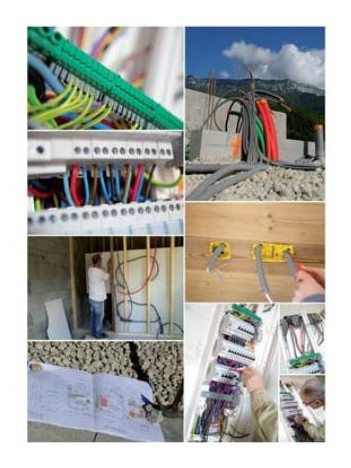
2.4.4.3. Pagos. Establecerá los medios de pago válidos para
los pagos así como fechas de vencimiento, posibles penalizaciones, etc.
2.5. CONDICIONES LEGALES GENERALES
2.5.1. El Contratista: establecerá dentro de las condiciones genera-
les aspectos a cumplir por el contratista, por ejemplo el estar establecido como instalador autorizado, y en caso de obras de entidad la clasificación mínima a cumplir por el mismo, etc.
2.5.2. Adjudicación. Para obras con concurso de adjudicación o si-
milares establecerá los plazos, y la forma de adjudicación del contratista.
Obras eléctricas
2.6. CONDICIONES TÉCNICAS GENERALES
2.6.1. Instalación Eléctrica. Se describirán las características a cum-
plir de los distintos elementos de la instalación incluidos las normativas y especificaciones técnicas generales a cumplir por cada equipo.
2.6.2. Obra Civil. Según se incluyan los trabajos de obra civil dentro
del mismo contrato o por el contrario se encuentren divididos
este aspecto regulará los requisitos a cumplir por el adjudicatario de cada parte de los trabajos.
2.6.3. Otros Trabajos. Caso de que pudieran realizarse trabajos dis-
tintos o ampliaciones de los trabajos originales se regularán aquí las condiciones técnicas de otros trabajos que pudieran requerirse durante la ejecución de la obra principal.
DE EQUIPOS Y ELEMENTOS. ESPECIFICACIONES DE LOS ELE- MENTOS INSTALADOS.
3.1. OBJETO: objeto de esta parte del pliego.
3.2. NORMATIVA VIGENTE. Relación de normativa vigente en el mo-
mento de la adjudicación del contrato.
3.3. ESPECIFICACIONES DE LOS EQUIPOS: se describirán en esta
parte todos los requisitos técnicos a cumplir por los equipos a instalar.
3.4. INSTALADORES: Relación de medios y equipos técnicos a cumplir
por los instaladores así como alcance de los registros y requisitos administrativos de los instaladores para la organización territorial en la que se ubique la obra.
3.5. USUARIOS Obligaciones a cumplir por los usuarios de los equipos
para la correcta seguridad y mantenimiento de la garantía de los equipos eléctricos.
3.6. IDENTIFICACIÓN DE LA MÁQUINA E INSTRUC. DE USO: Se adjuntarán instrucciones de uso y mantenimiento para la correcta seguridad futura y mantenimiento de la garantía de los equipos y elementos a instalar en la obra.
3.7. INSTALACIÓN Y PUESTA EN SERVICIO Se definirán los alcances de la puesta en marcha y pruebas funcionales así como las obligaciones de documentación a aportar por el contratista y aspectos de legalización de las instalaciones.
3.8. INSPECCIONES Y REVISIONESPERIÓDICAS Dado que para determinados equipos e instalaciones existen obligaciones de inspecciones y revisiones quedarán documentadas con objeto del conocimiento de las mismas por parte del promotor o futuros usuarios.
3.9. REGLAS GENERALES DE SEGURIDAD
3.9.1. Medidas Preventivas Generales. Medidas preventivas gene-
rales a cumplir en relación a la seguridad de los equipos con objeto de que no sufran deterioros durante la ejecución de los trabajos.
3.9.2. Estabilidad de las Máquinas,
3.9.3. Partes Accesibles.
3.9.4. Elementos Móviles.
3.9.5. Máquinas Eléctricas.
3.9.6. Ruidos y Vibraciones.
3.9.7. Puesto de Mando de las Máquinas.
3.9.9. Desconexión de la Máquina.
3.9.10. Parada de Emergencia.
3.9.11. Mantenimiento, Ajuste, Regulación, Engrase, Alimentación u
Otras Operaciones a Efectuar en las Máquinas.
3.9.12. Transporte.
cumplir en los distintos pliegos y fueros de resolución de conflictos que no hayan podido resolverse por otros medios.
Los pliegos de condiciones son los documentos contractuales de las obras, existiendo de diversos tipos en función de su naturaleza: Técnicos, Administrativos, etc. Deben servir para establecer obligaciones y derechos y servir para resolver discrepancias.
Se conoce por mediciones a la acción de medir una obra con objeto de cuantificar las cantidades necesarias de cada elemento diferente para el conjunto de los trabajos.
Desde nuestro punto de vista las mediciones del proyecto será la parte del proyecto donde se describen las unidades de obra a ejecutar, estableciendo las cantidades de las mismas que serán necesarias para la correcta ejecución completa de los trabajos.
Las unidades de obra se suelen agrupar en capítulos dentro de la ejecución total de los trabajos. El objetivo es separar en capítulos los trabajos que se ejecutan oficios diferentes y/o fases de la obra relativamente secuenciales, es decir capítulos ordenados en función del comienzo de cada uno de ellos.
Como ejemplo vernos los capítulos de una obra de vivienda:
Relación de capítulos de obra de un edificio.
Nº de capítulo Nombre del capítulo
1 DEMOLICIONES
2 ACONDICIONAMIENTO DE TERRENOS
3 SANEAMIENTO
4 CIMENTACION Y ESTRUCTURAS
5 ALBAÑILERIA
6 CUBIERTAS, IMPERME. Y AISLAMIENTOS
7 INSTALACIONES AGUA
8 INSTALACIONES ELECTRICIDAD
9 TELECOMUNICACIONES
10 REVESTIMIENTOS
11 CARPINTERIA
12 ASCENSORES
13 PINTURAS
14 VARIOS
15 SEGURIDAD Y SALUD
Como observamos si bien la secuenciación no es completa si llevan un orden lógico en cuanto al inicio de los capítulos en el tiempo y a la división de oficios.
En un segundo ejemplo mostramos la relación de capítulos de una modificación de un edificio en el que se incluirá un sistema de captación fotovoltaico en cubierta y se realizará una modificación con cambio de forma de consumo pasando de una conexión original de red de baja tensión a la incorporación de un centro de transformación de abonado para un conjunto de viviendas:
Relación de capítulos de obra de ejecución de sistema FV y Centro de Transformación de tipo Abonado:
| N.º de capítulo | Nombre del capítulo |
|---|---|
| CAPÍTULO 01 | Sistema de captación solar |
| CAPÍTULO 02 | Sistema DC e inversores |
| CAPÍTULO 03 | Sistema eléctrico y protecciones AC/DC |
| CAPÍTULO 04 | Centro de Transformación + AT/BT + Entronque |
Puede observarse que la división de los capítulos de nuevo comprende los trabajos que con cierta secuenciación se realizarán posteriormente y en función de las zonas físicas donde se concentran.
En un segundo nivel dentro de los capítulos se encontrarán las partidas del proyecto. Las partidas están compuestas por las partes proporcionales de materiales, mano de obra y otros elementos que son necesarios para completar una unidad de obra expresada en unidades físicas que permitan su medición.
Habitualmente estas unidades físicas suelen ser:
Ud.=Unidades: Apropiada por ejemplo para elementos (magnetotérmicos, diferenciales, etc.)
Ml = metro lineal (Apropiada para líneas y similares).
M2= Metros cuadrados (Apropiadas para sistemas por ejemplo m2 de paneles solares, etc.)
M3= Metros cúbicos. (Apropiadas para unidades de obra como movimientos de tierra)
W= Vatios de instalación (Apropiadas para elementos como inversores, sistemas completos, etc.)
Etc.
De este modo nos permitirá realizar la medición de nuestra obra mediante suma de unidades medibles o estimables sobre planos o croquis multiplicada por partidas que incluirán los descompuestos de unidades de material, mano de obra, auxiliares, etc. que va a requerir nuestra obra.
Por tanto para nosotros la acción de realizar mediciones será la de reconocer las unidades de obra en forma de partidas agrupadas en capítulos de los trabajos que serán necesarios y multiplicarlos por el número de unidades a medir sobre plano o del mejor modo en que podamos aproximarnos a la medida más real posible en las unidades en que midamos las distintas partidas.
Ejemplo:
Determinar las unidades de elementos mínimos necesarios para componer una CGMP de 10 viviendas de electrificación básica.
Solución: dado que medimos elementos la mejor unidad a emplear será precisamente UD. Estamos seguros de que al menos requeriremos una CGMP homologada, un IGA de 25 A, un diferencial de al menos 25 A y 30 mA de sensibilidad y cinco magnetotérmico para circuitos C1 a C5 con las siguientes Intensidades nominales respectivamente: 10A, 16A, 25A, 20A, 16A. Por tanto nuestras partidas medidas en Ud. quedarían:
Medición de una CGMP
| Partida | Descripción | Unidades |
|---|---|---|
| P1 | Caja C. mando y protección 1 DIF + 6 MAGN. + I.C.P. | 10 |
| P2 | Interruptor diferencial II, int. nominal 25 A, sensibilidad 0,03 A | 10 |
| P3 | Interruptor automático magnetotérmico bipolar de 10 A | 10 |
| P4 | Interruptor automático magnetotérmico bipolar de 16 A | 20 |
| P5 | Interruptor automático magnetotérmico bipolar de 25 A | 20 |
| P6 | Interruptor automático magnetotérmico bipolar de 20 A | 10 |
Donde puede comprobarse que unificamos aquellas partidas que poseen la misma descripción exactamente en una única línea de medición.
Una vez que tenemos determinados los capítulos y partidas de las distintas unidades de obra y hemos cuantificado en unidades homogéneas las mismas, debemos determinar los descompuestos de cada partida. Es decir si bien el cuadro anterior indica los elementos necesarios para componer una CGMP de unas viviendas de electrificación básica, no detalla los elementos de distinta naturaleza que serán necesarios para la instalación de cada partida en cuanto a materiales, manos de obra, elementos auxiliares requeridos u otro pequeño material o herramientas necesarios para su culminación completamente instalada.
Como ejemplo tomaremos la partida 01 CAJA C.MANDO Y PROTECCION 1DIF+6MAGN.+I.C.P. Si buscamos en un banco de precios (que veremos más adelante) la descripción de la partida completa encontraremos:
“MEDICIÓN DE CAJA PARA CUADRO DE MANDO Y PROTECCION, PARA EMPOTRAR CON CAPACIDAD PARA UN INTERRUPTOR DIFERENCIAL, SEIS MAGNETOTERMICOS Y I.C.P., CON TAPA PRECINTABLE, INCLUSO AYU- DAS DE ALBAÑILERIA; CONSTRUIDO SEGUN NORMATIVA. MEDIDA LA UNI- DAD INSTALADA.”
Según esta descripción aparte del propio material de la CGMP (la caja en sí) se requerirán otros medios de mano de obra especializada electricidad y albañilería y los recursos necesarios para instalar la caja totalmente terminada. Concretamente se identifican los siguientes medios y rendimientos:
Descompuestos de la partida P01
| Naturaleza del descompuesto | Unidad | Descripción | Rendimiento en la partida |
|---|---|---|---|
| Material | u | Caja de cuadro de protección para 1 DIF., 6 MAGNT. e ICP | 1 |
| Material | u | Pequeño material | 1 |
| Mano de obra | h | Oficial 1.ª electricista | 0,1 |
| Mano de obra | h | Cuadrilla albañilería, formada por oficial 1.ª y peón especial | 0,09 |
| Mat. comp. | u | Material complementario o piezas especiales | 0,5 |
Es decir que de forma estimada se requerirá una CGMP (el material), una unidad de pequeño material, 0,1 horas de oficial electricista, 0,09 horas de cuadrilla de oficial 1ª albañil y peón especial y 0,5 Ud. de material complementario o piezas especiales. Debe notarse que las estimaciones del rendimiento de tiempo y pequeño material que cada operario debe realizar por cada caja general de mando y protección se encuentran dentro de un contexto general de ejecución de obra, es decir, es el tiempo que deben dedicar aproximadamente a la CGMP tenido en cuenta dentro de una ejecución de obras en la zona. Obviamente si por ejemplo una cuadrilla se desplaza exclusivamente a una obra de vivienda existente a instalar una CGMP y terminan al marcharse sin duda emplearán mucho más tiempo y estos rendimientos deberán modificarse. Sin embargo si una cuadrilla está ejecutando una pared de ladrillo y durante la ejecución dedican un pequeño espacio de su tiempo a dejar ubicado este elemento, el tiempo de perjuicio dentro de la ejecución de la pared debe aproximarse bastante bien al valor de rendimiento medido en esta partida.
Las mediciones de las partidas y sus descompuestos son un paso previo a la determinación de los presupuestos de obra. Una vez que hemos obtenido de modo previsto las cantidades y unidades de partidas y descompuestos de cada una de ellas en unidades homogéneas y apropiadas para la unidad de obra que se ha medido, deben determinarse los precios en la mejor aproximación posible de cada una de ellas.
En el caso de obras públicas y de forma extrapolable a muchas obras privadas o cómo mínimo como una referencia de aproximación válida, las Comunidades Autónomas desarrollan y publicitan los llamados bancos de precios. La Base de Precios es una herramienta de apoyo para evaluar los costes de construcción y realizar presupuestos con descripciones de unidades de obra completas. La mayoría de Comunidades ofrecen de forma gratuita en formatos exportables a otros programas de mediciones y presupuestos como puede ser ejemplo de ellos el formato *.bc3, exportable a otros programas, el más común de ellos presto. También existen herramientas informáticas privadas para generar precios como Cype construcción por ejemplo, pero el acceso a ellos suele implicar costes de licencias.
Nosotros realizaremos el ejemplo anterior mediante banco de precios aprobado para la comunidad de Madrid si bien el acceso a otras Comunidades resultará en principio igual de sencillo. En el caso de la Comunidad Madrileña se permite también el acceso libre a través de navegador web incorporando también una herramienta de búsqueda.
Seguiremos con el ejemplo anterior y buscaremos los precios que asigna como precio de referencia dicho banco de precios:
En el caso de este banco de precios la partida incluye los componentes del CGMP en una misma partida, es la partida: EIEL20a Ud. Cdro. gnal distr EB p/5 circ. A la cual le asigna un precio de referencia de 298,98 € por Ud., y cuya descripción presenta:
“Instalación de cuadro general de distribución de vivienda con una electrificación básica, con caja y puerta de material aislante autoextinguible y dispositivos de mando, maniobra y protección general mediante 1 PIA 2x25 A y 1 interruptor diferencial 2x25A/30 mA para 5 circuitos: 1 para iluminación con 1 PIA de 10 A, 1 para tomas generales y frigorífico con 1 PIA de 16 A, 1 para tomas de corriente en baños y auxiliares de cocina con 1 PIA de 16 A, 1 para lavadora, lavavajillas y termo con 1 PIA de 20 A y 1 para cocina y horno con 1 PIA de 25 A, totalmente instalado, conectado y en correcto estado de funcionamiento, según el Reglamento Electrotécnico de Baja Tensión 2002. “
Y para la cual ofrece un cuadro de descompuestos:
Descompuestos de la partida EIEL20a.
| Código | Cantidad | Ud. | Descripción | Precio | Importe |
|---|---|---|---|---|---|
| MOOE.8a | 1,7 | h | Oficial 1.ª electricidad | 15,59 | 26,50 |
| MOOA.9a | 0,8 | h | Oficial 2.ª construcción | 16,19 | 12,95 |
| PIEA.5bca | 1 | Ud. | Caja distribución monofásica 7 emp | 15,47 | 15,47 |
| PIED.3aaba | 1 | Ud. | Interruptor diferencial 25 A bipolar 30 mA | 91,34 | 91,34 |
| PIED.1bbba | 1 | Ud. | Interruptor magnetotérmico 10 A unipolar + N C 6 kA | 28,48 | 28,48 |
| PIED.1cbba | 2 | Ud. | Interruptor magnetotérmico 16 A unipolar + N C 6 kA | 29,04 | 58,08 |
| PIED.1dbba | 1 | Ud. | Interruptor magnetotérmico 20 A unipolar + N C 6 kA | 29,87 | 29,87 |
| PIED.1ebba | 1 | Ud. | Interruptor magnetotérmico 25 A unipolar + N C 6 kA | 30,43 | 30,43 |
| % | 0,02 | Costes directos complementarios | 293,12 | 5,86 |
Como puede observarse en este caso vienen incluidos los componentes diferenciales y magnetotérmicos. Lógicamente al ser precios de referencia puede darse el caso en que necesitemos variar precios o rendimientos dentro del cuadro de descompuestos para adaptarlos a nuestro caso concreto, en función del tamaño de la obra, cantidad de veces que se repite una partida, etc.
Indicar que los bancos de precios se realizan como referencia, por tanto tratan de aproximarse a un precio medio razonable para casos generales. En aquellas obras donde la unidad se repita pocas veces y por una cuestión de no
linealidad de los precios, es lógico que se esperen valores algo superiores, mientras que obras de tamaño medio o grande donde las unidades sean muy grandes estarán bastante bien proporcionados o incluso podrán ofrecerse por el contratista bajas sobre estos precios previstos.
Cabe indicar también que los descompuestos ofrecen precios simples, es decir, ofrecen el precio que debe costar realizar un determinado trabajo y que se denominan costes directos. Deben incluir los materiales, mano de obra y también los gastos auxiliares que se deban al uso de herramientas específicas y amortización de estos medios. Sin embargo, estos precios se ven incrementados por un descompuesto más denominado en la partida costes directos complementarios en el caso de esta partida por un 2% de la partida.
Costes directos complementarios (o costes indirectos): La contrata principal de una adjudicación de obra, debe poner a disposición de la obra una serie de medios que no están considerados directamente incluidos en los costes directos. Gastos como mano de obra para limpieza, transporte interno (mano de obra auxiliar), otros medios y herramientas requeridos para la obra como andamios, maquinaria de elevación y transporte, etc. (Maquinaria auxiliar), otros materiales desde productos de limpieza, medios de protección, EPIs, vallas, etc. (Materiales auxiliares) y otros gastos necesarios como puedan ser suministros provisionales de obra de agua, electricidad, comunicaciones, almacenes provisionales, etc. (Gastos auxiliares).Todos estos gastos suelen expresarse como un porcentaje de la ejecución material dentro de la misma partida. Los costes así calculados se considerarán PEM: precios de ejecución material y serán suma de los gastos directos de una obra y los gastos directos complementarios.
Podemos clasificar los costes indirectos esperados como:
Los costes indirectos (o directos complementarios) son aquellos que no siendo directamente de realización de la partida son necesarios de forma complementaria para su realización.
Por ejemplo en el caso de algunos pliegos de clausulas administrativas se indica:
“ ..que todos los trabajos, medios auxiliares y materiales que sean necesarios para la finalización correcta de cualquier unidad de obra se consideren incluidos en el precio de la unidad, aunque no se especifiquen en la descomposición o descripción de los precios.”
No obstante lo anterior, es habitual encontrarse en mediciones de obra un capítulo específico dedicado a Seguridad y Salud y/o a control de Calidad. Esto se hace para evitar incluir en un solo descompuesto dentro de cada partida el porcentaje de estos conceptos.
En resumen, el precio de una partida (precio de ejecución material PEM) de la obra debe incluir tanto los costes directos de ejecución de la partida como los costes indirectos (también denominados costes directos complementarios), incluyendo por tanto materiales, mano de obra y herramientas directos para la ejecución del trabajo y también el otros necesarios auxiliares para la completa realización de la partida. Si el capítulo de Seguridad y Salud y/o control de calidad o aquellos conceptos que no estuvieran incluidos en ellos, no se encontraran en capítulo aparte también deberán estar considerados junto a los gastos indirectos de cada partida.
Para nuestro ejemplo anterior el precio de ejecución material será de 298,98 €, de los cuales se considera costes directos de la partida 293,12€ y 5,86 € son costes directos complementarios. Habrá de determinarse si para nuestro proyecto se adecúan o no y son susceptibles de ser modificados. No obstante si durante la redacción de un proyecto se modifican costes de una partida se recomienda que se modifique el código de la partida original del banco de precios, es decir si la denominación de la partida original era EIEL20a se recomienda que se modifique a otra numeración propia para el proyecto actual.
Presupuesto de contrata: con todo, el presupuesto de una obra que se adjudica a una empresa contratista no es suficiente con el coste de ejecución material, pues entran en juego otros condicionantes para la consecución global de la obra.
Concretamente el presupuesto de ejecución material se verá incrementado usualmente por los siguientes conceptos:
Gastos Generales: se consideran aquí los gastos generales de una empresa. Toda empresa que gestiona obras incurrirá en gastos no relacionados directamente con la obra como son su personal general, contabilidad, dirección, jefes de obras, etc. oficinas, gastos financieros centrales, gestión de impuestos, etc. Igualmente la propia ejecución del contrato de obra sufrirá también estos gastos como los derivados de la entrega de fianzas, costes financieros de gastos de la propia obra, gestión financiera de certificaciones, etc. En algunos casos también pueden estar incluidos otros gastos como licencias de obras si así los especificara en los pliegos de condiciones particulares.
Valores típicos de este valor (GG) se encuentran entre el 11% y el 16 % de la ejecución de la obra, aunque pueden ser mucho mayores en obras de poca entidad.
Beneficio industrial: toda contrata de ejecución de obras debe obtener beneficios finales de las obras que realiza, de otro modo no tendría sentido la existencia de la misma. El beneficio industrial de una obra suele situarse entre el 3% y el 7% siendo el 6% un valor típico. De nuevo y dado que el porcentaje de obras pequeñas debe ser mayor para que resulte significativo, pueden darse ocasiones con porcentaje bastantes mayores.
Honorarios de profesionales: Habitualmente estos conceptos no se incluyen en el presupuesto de una obra ya que suele ser el propio promotor quien asigne y adjudique los técnicos que desarrollan las obras. No obstante pueden encontrarse adjudicaciones conjuntas donde aparezcan los honorarios de los técnicos facultativos.
Presupuesto para conocimiento de la administración (PCA)
Se emplea cuando una administración (aunque exportable el caso a promotor privado) está interesada en que la adjudicación conlleve todo gasto posterior necesario. Es el resultado incrementarle al presupuesto de ejecución de contrata todo aquello que es necesario para realizar la obra y que no son elementos que tenga que realizar directamente la empresa contratada (traslado de líneas eléctricas y de teléfono, altas a compañías suministradoras, proyecto y dirección de obra, etc.)
Presupuesto de la licitación de la obra.
Es el importe que sirve de base para formular las ofertas económicas de las empresas que concurren a una licitación de obra. Se emplea un precio de salida que suele ser aplicación de los valores típicos de Gastos Generales, Beneficio industrial al precio de ejecución material de la obra. Sobre este precio las distintas empresas interesadas en la adjudicación podrán realizar las bajas que estimen oportunas expresada como un porcentaje de la obra y/0 como un precio final de adjudicación.
Presupuesto de adjudicación.
Es el importe por el que se adjudica finalmente la obra. Este importe será el que figure en el contrato de obras, y en caso de implicar una baja, las certificaciones de obras posteriores reflejaran el precio de ejecución material, el porcentaje de Gastos Generales y Beneficio industrial y la baja correspondiente si esta se ha dado. Por tanto podrá ser en general igual o menor la presupuesto de licitación. Todo lo anterior irá gravado con el correspondiente impuesto.
IVA
Es el impuesto del valor añadido por los que se gravarán las certificaciones de obra y los cuales se expresarán en la correspondiente factura a realizar por la empresa contratista.
Bajas temerarias: En ocasiones los concursos de adjudicación o en el caso privado a criterio del responsable de la adjudicación se pueden prever situaciones en las cuales el precio de la oferta de una determinada contrata puede descartarse por el peligro que supone que un precio demasiado bajo pueda redundar en una defectuosa ejecución de la obra y/o en problemas de otro tipo como retrasos importantes, situación económica complicada de la contrata, etc. A continuación mostramos un ejemplo de concurso de obras con baja temeraria prevista:
“..Quedarán excluías por consideración de oferta anormalmente baja o desproporcionadas aquellas proposiciones que en su oferta resulten de un precio menor al 12 % de la media de ofertas realizada por todos las demás ofertas...”
En el caso público no obstante se da audiencia a los contratistas afectados del criterio de oferta desproporcionada o anormalmente baja con objeto de que pueda justificar su solvencia para realizar la obra al precio ofertado.
Baja temeraria es aquella que resulta anormalmente baja o desproporcionada y en el caso de concursos públicos sólo se considerará si estaba definida en los pliegos de condiciones del concurso o adjudicación.
La obligación de la realización de un estudio de seguridad y salud (sea éste básico o desarrollado) viene obligado en el territorio español por:
Si deseas ampliar información, puedes consultar en internet REAL DECRETO 1627/1997, de 24 de octubre, por el que se establecen disposiciones mínimas de seguridad y salud en las obras de construcción. BOE nº 256 25-10-1997
En su artículo 4 figura:
“Artículo 4. Obligatoriedad del estudio de seguridad y salud o del estudio básico de seguridad y salud en las obras: El promotor estará obligado a que en la fase de redacción del proyecto se elabore un estudio de seguridad y salud en los proyectos de obras en que se den alguno de los supuestos siguientes:
Que el presupuesto de ejecución por contrata incluido en el proyecto sea igual o superior a 75 millones de pesetas (450.759,08 €).
Que la duración estimada sea superior a 30 días laborables, empleándose en algún momento a más de 20trabajadores simultáneamente.
Que el volumen de mano de obra estimada, entendiendo por tal la suma de los días de trabajo del total de los trabajadores en la obra, sea superior a 500.
Las obras de túneles, galerías, conducciones subterráneas y presas.
En los proyectos de obras no incluidos en ninguno de los supuestos previstos en el apartado anterior, el promotor estará obligado a que en la fase de redacción del proyecto se elabore un estudio básico de seguridad y salud.”
Por tanto, los criterios 1 a 4 determinan qué tipo de obligación tiene el promotor sobre la designación de un técnico para la redacción de un tipo u otro entre estudio básico de seguridad y salud o estudio de seguridad y salud. Habitualmente el propio redactor de un proyecto eléctrico en caso de que no se cumplan ninguno de los supuestos de 1 a 4 y por tanto para un estudio básico de seguridad y salud suele ser el propio técnico que realiza el resto del proyecto.
En el presente estudiaremos el contenido de un estudio Básico de Seguridad y Salud, dado que para otros casos de mayor entidad los redactores suelen ser técnicos especializados en la materia concreta de seguridad y salud.
Contenido de un estudio básico de seguridad y salud:
“… El estudio básico de seguridad y salud a que se refiere el apartado 2 del artículo 4 será elaborado por el técnico competente designado por el promotor. Cuando deba existir un coordinador en materia de seguridad y salud durante la elaboración del proyecto de obra, le corresponderá a éste elaborar o hacer que se elabore, bajo su responsabilidad, dicho estudio.”
En tal caso ¿cuándo debe existir coordinador en materia de seguridad y salud?
Antes de contestarnos a esa preguntan debemos definir las dos posibles figuras de coordinador de seguridad y salud introducida por esta norma:
Durante la ejecución del proyecto:
“En las obras incluidas en el ámbito de aplicación del presente Real Decreto, cuando en la elaboración del proyecto de obra intervengan varios proyectistas, el promotor designará un coordinador en materia de seguridad y de salud”
Durante la elaboración de la obra.
“…Cuando en la ejecución de la obra intervenga más de una empresa, o una empresa y trabajadores autónomos o diversos trabajadores autónomos, el promotor, antes del inicio de los trabajos o tan pronto como se constate.”
Por tanto, lo que prevé la norma es que durante la ejecución del proyecto exista o bien un único proyectista que por tanto aunará la labor de proyectista y redactor del estudio de seguridad y salud o en el caso de que exista más de un proyectista que el promotor designe a uno de ellos para coordinar los aspectos de seguridad y salud entre ellos. De modo análogo en el caso de durante la obra exista una única empresa realizando los trabajos no se hará necesaria la existencia de un coordinador de seguridad y salud, mientras en el caso de que existan varias, entonces sí exista la obligación por parte del promotor de designar un coordinador que actúe como administrador en seguridad y salud entre las distintas empresas.
En cuanto al estudio básico en sí recoge:
“..El estudio básico deberá precisar las normas de seguridad y salud aplicables a la obra. A tal efecto, deberá contemplar la identificación de los riesgos laborales que puedan ser evitados, indicando las medidas técnicas necesarias para ello; relación de los riesgos laborales que no puedan eliminarse conforme a lo señalado anteriormente, especificando las medidas preventivas y protecciones técnicas tendentes a controlar y reducir dichos riesgos y valorando su eficacia, en especial cuando se propongan medidas alternativas. En su caso, tendrá en cuenta cualquier otro tipo de actividad que se lleve a cabo en la misma, y contendrá medidas específicas relativas a los trabajos incluidos en uno o varios de los apartados del anexo II.”
En los trabajos recogidos en el anexo dos se encuentran la mayoría de los trabajos relacionados con la electricidad debido a su gran peligrosidad, pues si bien el accidente eléctrico no es común en cuanto a número de caso sí es uno de los que registra mayor siniestralidad.
“…En el estudio básico se contemplarán también las previsiones y las informaciones útiles para efectuar en su día, en las debidas condiciones de seguridad y salud, los previsibles trabajos posteriores.”
Abordaremos ahora aspectos generales de la normativa en materia de prevención de la seguridad y salud así como otros aspectos normativos relacionados:
Existe una numerosísima cantidad de legislación en materia industrial y un enorme número decretos son sobre prevención de riesgos laborales:
Legislación: Ley 31/1995Es la más importante y general y en ellas se basan todos los principios en los que basar los estudios de seguridad y los trabajos en general:
Estructura de la Ley y de disposiciones posteriores:
Generales: Seguridad general en los productos.
Específicas: Lugar de trabajo con pantallas de visualización de datos, manipulación manual de cargas, etc. y para el producto: Seguridad de máquinas, productos de construcción, equipos a presión, etc.
La norma básica en materia de seguridad y salud en el trabajo es la Ley 31/1995
La fase previa a una implementación de seguridad y salud en el puesto de trabajo es siempre la evaluación de los riesgos que se presentan para cada puesto de trabajo de nuestra actividad.
Previo a esta evaluación de riesgos, se estudian las sintomatologías de los trabajadores:
Fatiga física y mental: “sensación penosa que se experimenta después de un trabajo físico o intelectual prolongado e intenso”
Se manifiesta a través de síntomas de afectación a los sistemas circulatorio, digestivo, nervioso, muscular y respiratorio.
Se distinguen también: fatiga general, sensorial, física, mental, clínica…
Se establece como una obligación de todo empresario la planificación de la acción preventiva en la empresa, la realización de una evaluación de riesgos inicial marcará esta planificación.
Las evaluaciones de riesgos comportan dos partes diferenciadas:
No termina con ello las obligaciones del empresario, pues la planificación debe establecer revisiones periódicas.
Todo empresario tiene la obligación de planificar la actividad preventiva.
Especialidades y objetivos:
II. Ergonomía y Psicosociología Aplicada; Objetivo: Prevenir la fatiga y la insatisfacción laboral.
III. Higiene Industrial; Objetivo: Prevenir las enfermedades profesionales.
Una evaluación de riesgos puede ocurrir en diferentes escenarios:
Protección:
La protección de un trabajador ante los riesgos evaluados para su control es una obligación para toda organización.
La normativa establece que la protección colectiva debe prevalecer sobre la protección individual. Los EPIS sólo se emplearán cuando los riesgos no se puedan evitar o reducir a niveles aceptables por otros métodos de protección colectiva y o cambio de métodos.
EPI: la norma define al equipo de protección individual como “cualquier equipo destinado a ser llevado o sujetado por el trabajador/a para que le proteja de uno o varios riesgos que pueden amenazar su seguridad o su saludo en el trabajo, así como cualquier complemento o accesorio destinado a tal fin”
Los EPIs deben ser adecuados a los riesgos de los que protege, cumplir las exigencias ergonómicas así como adecuarse al portador tras los necesarios ajustes.
Partes del cuerpo susceptibles de ser protegidas mediantes EPIs:
Colectiva
Componentes fundamentales:
Resguardos o dispositivos de seguridad:
Equipos
Todo equipo de trabajo que acceda a zonas de riesgo determinado deben poseer la correcta información y formación así como los equipos necesarios para su protección.
Es de obligación restringir el paso a zonas de trabajo donde las características de seguridad están dotadas de medidas especiales. Ej.: talleres, fábricas, obras..
En todo equipo de trabajo debe existir un recurso preventivo nombrado con autoridad suficiente para la interrupción de la actividad en caso de riesgo inminente. No obstante cualquier trabajador puede ejercer esta autoridad si detecta que él u otras personas podrían estar expuestos a un riesgo inminente para su seguridad.
Todo equipo EPI y equipo de maniobra eléctrico que se emplee en obra deberá tener el marcada CE que valida su cumplimiento normativo en la CE.
Según lo establecido en la ITC-BT-04 los instaladores en Baja Tensión (igual ocurre con los que consumen en Alta Tensión) tienen la obligación de registrar las instalaciones así como sus modificaciones o ampliaciones, concretamente:
“5. Ejecución y tramitación de las instalaciones.
5.1. Todas las instalaciones en el ámbito de aplicación del Reglamento
deben ser efectuadas por las empresas instaladoras autorizadas a las que se refiere la Instrucción Técnica complementaria ITC-BT-03.”
“…
5.4. Finalizadas las obras y realizadas las verificaciones e inspección inicial
a que se refieren los puntos anteriores, la empresa instaladora deberá emitir un Certificado de Instalación, suscrito por un instalador en baja tensión que pertenezca a la empresa, según modelo establecido por la Administración, que deberá comprender, al menos, lo siguiente:”
Recordamos aquí de nuevo que para el caso español dado que las competencias en materia de registro de instalaciones se encuentran delegadas por Comunidades los modelos no coinciden de forma plena entre ellas aunque sí las generalidades de las mismas.
Igualmente antes de que se puede realizar la puesta en marcha de una instalación la empresa instaladora deberá haber tramitado el certificado ante la Comunidad Autónoma a aportando además la MTD o el proyecto técnico y haber aprobado está el contenido. Así mismo la empresa instaladora habrá de firmar la concreción entre los proyectos o MTD y los trabajos finalmente realizados y de no ser así modificar los documentos según hayan sido efectivamente realizados en su totalidad.
A tener en cuenta también el hecho de que determinadas instalaciones previo a la tramitación del certificado pueden requerir la inspección de un organismo de control autorizado (OCA).
Si deseas ampliar información, puedes consultar en internet un ejemplo de modelo de certificado de instalación eléctrica de baja tensión de la Comunidad de Madrid.
“…El Órgano competente de la Comunidad Autónoma deberá diligenciar las copias del Certificado de Instalación y, en su caso, del certificado de inspección inicial, devolviendo cuatro a la empresa instaladora, dos para sí y las otras dos para la propiedad, a fin de que ésta pueda, a su vez, quedarse con una copia y entregar la otra a la Compañía eléctrica, requisito sin el cual ésta no podrá suministrar energía a la instalación, salvo lo indicado en el Artículo 18.3 del Reglamento Electrotécnico para Baja Tensión.”
El titular de la instalación deberá solicitar el suministro de energía a la Empresas suministradora mediante entrega del correspondiente ejemplar del certificado de instalación.
La Empresa suministradora podrá realizar, a su cargo, las verificaciones que considere oportunas, en lo que se refiere al cumplimiento de las prescripciones del presente Reglamento.
Cuando los valores obtenidos en la indicada verificación sean inferiores o superiores a los señalados respectivamente para el aislamiento y corrientes de fuga en la ITC-BT-19, las Empresas suministradoras no podrán conectar a sus redes las instalaciones receptoras.
En esos casos, deberán extender un Acta, en la que conste el resultado de las comprobaciones, la cual deberá ser firmada igualmente por el titular de la instalación, dándose por enterado. Dicha acta, en el plazo más breve posible, se pondrá en conocimiento del Órgano competente de la Comunidad Autónoma, quien determinará lo que proceda.
Datos generales de los certificados a presentar:
TITULAR
En esta parte debe especificarse el agente posteriormente titular de la instalación una vez se haya recepcionado la obra por parte del promotor. En muchas ocasiones promotor y titular de la instalación pueden no ser la misma persona física y jurídica, de modo que deben figurar los datos del que fuera a ser el titular final.
DATOS DE LA INSTALACIÓN
Dirección física de la instalación a realizar o realizada según proceda.
CARACTERÍSTICAS TÉCNICAS DE LA INSTALACIÓN
Usos de la instalación: Se establecen los siguientes usos para las instalaciones eléctricas:
Edificios destinados principalmente a viviendas o vivienda unifamiliar o similar: se entenderá este tipo de uso en bloques de viviendas o viviendas, pese a que puedan existir en ellos locales comerciales en sus en minoría y/u oficinas.
Edificios comerciales o de oficinas: se entiende uso comercial y oficinas a aquellos que por su naturaleza situación etc., prevalecerá el uso comercial.
Edificios destinados a una industria específica: se especificará si es conocido el destino industrial específico al que se destinará la industria realizada en el proyecto.
Edificios destinados a una concentración de industrias: son propios de polígonos industriales o edificios completos donde el destino industrial prevalecerá al comercial o de oficinas u otros usos, se conozcan o no el uso exacto de las industrias en el momento del proyecto.
Cada Comunidad Autónoma posee la competencia en materia de registro de instalaciones y determinarán los modelos a emplear para el registro de instalaciones.
Se entiende por obras de MODIFICACIÓN toda alteración de la instalación interior o exterior de los circuitos eléctricos que existen en un edificio, toda vez que las mismas no resulten en una ampliación de la potencia máxima admisible en la instalación después de la modificación
Sólo en caso de sustituciones de mantenimiento o reparación de averías puede considerarse que no existe modificación, siempre y cuando el uso final al que se destinaban los circuitos reparados/mantenidos no sean alterados durante las operaciones de mantenimiento o reparación de averías. Todos los demás casos aunque hayan venido promovidos por una avería o mantenimiento se considerarán modificaciones y por tanto estarán sujetos a la obligación de legalización como modificación de la instalación.
Lógicamente se darán los siguientes casos:
Potencia
Potencia de la
Potencia original de la
=
ampliación +
instalación
máxima admisible
Y en caso de modificación la potencia modificada será menor o igual a la potencia máxima admisible de la instalación, siendo esta última la misma antes y después de la intervención.
En caso de obra nueva la potencia de la ampliación o modificación y la potencia admisible original de la instalación lógicamente son datos no aplicables por lo que se marcará como N/A
El resto de datos se adecúan en principio a lo recogido en la MTD o proyecto en cuanto a las características técnicas de las instalaciones ya tratadas en puntos anteriores.
El Reglamento Electrotécnico de Baja Tensión es la norma básica en España para instalaciones en edificios, si bien incluye sólo aquellas instalaciones que se producen en Baja Tensión efectivamente. Concretamente todas aquellas instalaciones que cumplen:
Para líneas de distribución a mayores tensiones, así como entronques a las mismas para alimentaciones de Centros de Transformación de abonado no será de aplicación el presente REBT sino la normativa de Líneas de Alta Tensión para esa parte.
El Real Decreto 842/2002 fue publicado el 18 de septiembre de 2002 siendo de obligado cumplimiento a partir de un año después, el 18 de septiembre de 2003. Constaba de 29 artículos y su ámbito de aplicación era para instalaciones nuevas y para ampliaciones y modificaciones de importancia como hemos visto en el presente texto. Sin embargo a nivel de inspecciones el Real Decreto sustituía de forma completa al anterior, por lo que veremos un poco más acerca de estas obligaciones (recogidas en ITC-BT-05):
“4.1. Inspecciones iniciales.
Serán objeto de inspección, una vez ejecutadas las instalaciones, sus ampliaciones o modificaciones de importancia y previamente a ser documentadas ante el Órgano competente de la Comunidad Autónoma, las siguientes instalaciones:
4.2. Inspecciones periódicas.
Serán objeto de inspecciones periódicas, cada 5 años, todas las instalaciones eléctricas en baja tensión que precisaron inspección inicial, según
el punto 4.1 anterior, y cada 10 años, las comunes de edificios de viviendas de potencia total instalada superior a 100 kW.”
De este modo las inspecciones periódicas quedan como obligación para todas las instalaciones ya sean construcciones anteriores o posteriores a la fecha de entrada en vigor del citado Real Decreto.
Si deseas ampliar información, puedes consultar en internet RD 842/2002
Como hemos visto anteriormente, la Norma se divide en Instrucciones Técnicas Complementarias para mayor facilidad de aplicación. Consta de 51 ITC, las cuales vamos a listar en dos partes según su importancia relativa en general de edificios o en aplicaciones especiales:
Si deseas ampliar información, p uedes consultar en internet ITCs del REBT. Suplemento del BOE núm. 224. Miércoles 18 de septiembre 2002
Generales:
ITC-BT-01 Terminología.
ITC-BT-02 Normas de referencia en el Reglamento Electrotécnico de baja tensión.
ITC-BT-03 Instaladores autorizados y empresas instaladoras autorizadas.
ITC-BT-04 Documentación y puesta en servicio de las instalaciones.
ITC-BT-05 Verificaciones e inspecciones.
ITC-BT-06 Redes aéreas para distribución en baja tensión.
ITC-BT-07 Redes subterráneas para distribución en baja tensión.
ITC-BT-08 Sistemas de conexión del neutro y de las masas en redes de distribución de energía eléctrica.
ITC-BT-09 Instalaciones de alumbrado exterior.
ITC-BT-10 Previsión de cargas para suministros en baja tensión.
ITC-BT-11 Redes de distribución de energía eléctrica. Acometidas.
ITC-BT-12 Instalaciones de enlace. Esquemas.
ITC-BT-13 Instalaciones de enlace. Cajas generales de protección.
ITC-BT-14 Instalaciones de enlace. Línea general de alimentación.
ITC-BT-15 Instalaciones de enlace. Derivaciones individuales.
ITC-BT-16 Instalaciones de enlace. Contadores: Ubicación y sistemas de instalación.
ITC-BT-17 Instalaciones de enlace. Dispositivos generales e individuales de mando y protección. Interruptor de control de potencia.
ITC-BT-18 Instalaciones de puesta a tierra.
ITC-BT-19 Instalaciones interiores o receptoras. Prescripciones generales.
ITC-BT-20 Instalaciones interiores o receptoras. Sistemas de instalación.
ITC-BT-21 Instalaciones interiores o receptoras. Tubos y canales protectoras.
ITC-BT-22 Instalaciones interiores o receptoras. Protección contra sobreintensidades.
ITC-BT-23 Instalaciones interiores o receptoras. Protección contra sobretensiones.
ITC-BT-24 Instalaciones interiores o receptoras. Protección contra los contactos directos e indirectos.
ITC-BT-25 Instalaciones interiores en viviendas. Número de circuitos y características.
ITC-BT-26 Instalaciones interiores en viviendas. Prescripciones generales de instalación.
ITC-BT-27 Instalaciones interiores en viviendas. Locales que contienen una bañera o ducha.
ITC-BT-28 Instalaciones en locales de pública concurrencia.
ITC-BT-29 Prescripciones particulares para las instalaciones eléctricas de los locales con riesgo de incendio o explosión.
ITCs de fines especiales o aplicaciones más concretas:
ITC-BT-30 Instalaciones en locales de características especiales.
ITC-BT-31 Instalaciones con fines especiales. Piscinas y fuentes.
ITC-BT-32 Instalaciones con fines especiales. Máquinas de elevación y transporte.
ITC-BT-33 Instalaciones con fines especiales. Instalaciones provisionales y temporales de obras.
ITC-BT-34 Instalaciones con fines especiales. Ferias y stands.
ITC-BT-35 Instalaciones con fines especiales. Establecimientos agrícolas y hortícolas.
ITC-BT-36 Instalaciones a muy baja tensión.
ITC-BT-37 Instalaciones a tensiones especiales.
ITC-BT-38 Instalaciones con fines especiales. Requisitos particulares para la instalación eléctrica en quirófanos y salas de intervención.
ITC-BT-39 Instalaciones con fines especiales. Cercas eléctricas para ganado.
ITC-BT-40 Instalaciones generadoras de baja tensión.
ITC-BT-41 Instalaciones eléctricas en caravanas y parques de caravanas.
ITC-BT-42 Instalaciones eléctricas en puertos y marinas para barcos de recreo.
ITC-BT-43 Instalación de receptores. Prescripciones generales.
ITC-BT-44 Instalación de receptores. Receptores para alumbrado.
ITC-BT-45 Instalación de receptores. Aparatos de caldeo.
ITC-BT-46 Instalación de receptores. Cables y folios radiantes en viviendas.
ITC-BT-47 Instalación de receptores. Motores.
ITC-BT-48 Instalación de receptores. Transformadores y autotransformadores. Reactancias y rectificadores. Condensadores.
ITC-BT-49 Instalaciones eléctricas en muebles.
ITC-BT-50 Instalaciones eléctricas en locales que contienen radiadores para saunas.
ITC-BT-51 Instalaciones de sistemas de automatización, gestión técnica de la energía y seguridad para viviendas y edificios.
Guías técnicas: Una guía técnica es un documento técnico no vinculante, publicado con objeto de facilitar aspectos de las Instrucciones Técnicas Complementarias que puedan ser dudosos o ayudar a su correcta interpretación. Concretamente en el artículo 29 del Real Decreto se especifica:
“El centro directivo competente en materia de Seguridad Industrial del Ministerio de Ciencia y Tecnología elaborará y mantendrá actualizada una Guía técnica, de carácter no vinculante, para la aplicación práctica de las previsiones del presente Reglamento y sus instrucciones técnicas complementarias, la cual podrá establecer aclaraciones a conceptos de carácter general incluidos en este Reglamento.”
Si deseas ampliar información, puedes consultar en internet Guía técnica de aplicación: instalación de enlace. Previsión de cargas para suministros en baja tensión. Ministerio de ciencia y tecnología.
Las normas UNE literalmente Una Norma Española son normas de referencia empleadas como tal (como referencia) para la confección de normativa técnica en España.
La concesión del desarrollo de normativa de referencia a una entidad privada ENAC (AENOR), Entidad Española de Normalización y Certificación en el caso de la normativa técnica delegó la competencia en esta materia al entorno privado. Este conjunto de normas tecnológicas son creadas por los comités técnicos de normalización (CTN), de los que forman parte varias entidades y agentes implicados e interesados en los trabajos del comité. Por regla general
estos comités suelen estar formados por la ENAC, fabricantes, consumidores y usuarios, Administración, laboratorios, etc.…
Para la Administración esto tuvo la ventaja de mayor flexibilidad y rapidez en la adaptación de la normativa y ensayos de materiales y nuevas tecnologías, con mayor consenso de las partes, permitiendo incorporar en tiempo menor la regulación de nuevas evoluciones. Estas ventajas también las nota el mercado dado que puede basar el diseño de proyectos y nuevos materiales en normas que hayan sido ensayadas y aprobadas por un comité, aunque como es lógico asumiendo el coste de la compra de estas normas cuando se requieran.
Como tal, a priori, las normas UNE al ser de referencia en sí no son de obligado cumplimiento, pero sí lo son aquellas que mediante Leyes, Reales Decretos y Normativa Técnica Oficial se refieren a ellas ya sea total o parcialmente. No obstante y dado que pueden ser empleadas para resolver litigios y otros conflictos, conviene su conocimiento o uso como referencia para los proyectos que estemos tratando.
Este es el caso que nos ocupa pues el REBT está organizado en Instrucciones Técnicas Complementarias de modo que en éstas a su vez usan normas de referencia UNE para las exigencias mínimas de materiales y otros aspectos técnicos, etc. Así durante el diseño o instalación, proyectista e instalador no necesitan verificar el cumplimiento de un determinado material a través de la lectura de una norma, sino a través del certificado del fabricante de haberlas cumplido.
Por otro lado, CENELEC es un organismo francés (Comité Européen de Normalisation Electrotechnique). Este organismo es el encargado en el marco de la normativa europea en procurar la estandarización de la normativa entre los distintos países miembros en el área de la ingeniería eléctrica. Aquellas normas que logran esta estandarización Europea por acuerdo consensuado entre todos sus miembros son nombradas en España como normas UNE-EN_xxxx.
A su vez, el trabajo de CENELEC viene a su vez basado en las publicaciones de la Comisión Electrotécnica Internacional IEC, (por sus siglas en inglés,fiInternational Electrotechnical Commission). Cuando existe algún tipo de normativa también consensuada a nivel internacional pueden encontrarse normas UNE-ISO.
Si deseas ampliar información, puedes consultar en internet ITC- 02 Normas UNE de referencia empleadas en REBT
Normativa medioambiental:
La normativa medioambiental: La normativa medioambiental en España es realmente extensa y en ocasiones compleja de abordar por todos los estamentos que implica. Comenzaremos comentando la:
La Ley 26/2007, de 23 de octubre, de Responsabilidad Medioambiental, que transpone al Derecho español la Directiva 2004/35/CE del Parlamento Europeo y del Consejo sobre responsabilidad medioambiental en relación con la prevención y reparación de daños medioambientales.
Si deseas ampliar información, puedes consultar en internet La Ley 26/2007 de Responsabilidad Medioambiental
Esta normativa europea tienen por principio la aplicación de que cualquier persona o empresa que produce o puede producir algún perjuicio medioambiental y que todo gasto producido por un daño medioambiental o cualquier gasto derivado de su propia prevención a animales, plantas, recursos hídricos, suelos, etc. en general al medioambiente, garantice la responsabilidad del agente que lo produjo. Por tanto cualquier persona o empresa que pueda o pudiera producir cualquier efecto pernicioso desde el punto de vista medioambiental tienen la obligación de ejercer la prevención y en caso de no poder evitarlo tendrá la obligación de correr con los gastos derivados de su subsanación.
Concretamente establece un marco común de responsabilidad con el fin de prevenir y reparar los daños causados a los animales, las plantas, los hábitats naturales y los recursos hídricos, así como los daños que afectan a los suelos y estructura. Los gastos ocasionados para la prevención, evitación o reparación de los daños causados correrán a cargo del agente que los produjo directa o indirectamente. Puede decirse que tiene por objetivo que para todo el marco de la unión europea se aplique un principio de “quien la hace, la paga” en cuestión medioambiental.
Sin embargo de nuevo en el caso del territorio español la estructuración y aplicación de esta norma indica que compete a las Comunidades Autónomas la vigilancia de hacer cumplir la Ley con excepción de aquellos casos donde el daño medioambiental se haya producido sobre espacios de titularidad estatal. Por este motivo nos encontramos también Leyes a nivel de cada Comunidad Autónoma sobre protección ambiental, resultando una gran cantidad de las mismas.
Del mismo modo los ayuntamientos pueden incluir normativas ambientales para regular aspectos de las actividades industriales y obras, existiendo habitualmente normativas por ejemplo de ruidos que se consideran igualmente normativa medioambiental.
Estudios de impacto ambiental
Tienen por objeto evaluar la viabilidad ambiental de los proyectos identificando los posibles peligros o riesgos para el medioambiente y tratando de implantar las medidas correctivas necesarias para controlar estos riesgos. La obligación de la evaluación o estudio de impacto ambiental dependerá de la Ley que sea de aplicación en la Comunidad Autónoma en que nos encontremos o es su caso de la Administración Estatal competente cuando afecte a espacios de titularidad Estatal. Existen proyectos de gran impacto ambiental como por ejemplo líneas aéreas de alta tensión en que casi todos los casos requerirán un estudio de este tipo para su ejecución dado el alto impacto visual que producen además de aspectos relacionados con fauna autóctona como aves que puedan ver alterados su hábitat.
Dado que el contenido de un EIA está regulado, suelen compartir el esquema de índice tipo para cualquier EIA, el cual podría constar de las siguientes partes:
En el desarrollo del estudio se deben localizar los posibles impactos del proyecto y evaluar si existen medios para evitar estos impactos o al menos proponer medidas correctoras destinadas a lograr que el mismo quede prevenido y controlado.
Normativa medioambiental:
Para el resto de obras que no impliquen una evaluación de impacto ambiental (EIA), la normativa medioambiental será en general sobre el proyecto de construcción del edificio y sobre su posterior puesta en marcha a través de licencias de obras, de apertura en el caso de locales y comercios y/o a través de cédulas de habitabilidad en el caso de viviendas.
Sin embargo si habrán de tenerse en cuenta ciertas medidas medioambientales durante la ejecución de obra en gestión de residuos y también aunque no directamente medioambiental, aspectos relacionados con el fuego.
Desde el punto de vista de la clasificación de residuos los residuos eléctricos de obras se consideran residuos industriales inorgánicos, y atendiendo al Real Decreto 208/2005, de 25 de febrero, sobre aparatos eléctricos y electrónicos y la gestión de sus residuos (Vigente hasta el 01 de Junio de 2015):
“Se entenderá por residuos de aparatos eléctricos y electrónicos procedentes de hogares particulares los procedentes de domicilios particulares y de fuentes comerciales, industriales, institucionales y de otro tipo que, por su naturaleza y cantidad, son similares a los procedentes de hogares particulares. Estos residuos tendrán la consideración de residuos urbanos, según la definición del artículo 3.b) de la Ley 10/1998, de 21 de abril, de Residuos.”
Por su influencia sobre el medioambiente y su tratamiento como residuo, los restos de los materiales empleados en los conductores (cobre y aluminio) no suelen suponen grandes problemas medioambientales. Sobre todo porque aunque sean residuos poseen un valor económico importante, lo que hace que resulte rentable recurrir a su reciclado mediante entrega en centros de gestión de este tipo de materiales.
Mayor resulta el problema con el resto de residuos que se suelen producir en obras eléctricas de origen plástico que acostumbran a ser importantes en cantidad. Los plásticos se están convirtiendo en un gran problema ecológico pues resultan bastante estables en la naturaleza. Animales como aves comen de ellos en los vertederos y en los que pueden acabar en ríos, lagos o el mar producen grandes problemas a peces y animales acuáticos. Por eso deben ser reciclados.
Además en el caso del muy utilizado en obras eléctricas PVC (policloruro de vinilo) el contenido plástico contiene un halógeno cloro que resulta tóxico en caso de incendio, además de no tener en general un buen comportamiento ante el fuego, pudiendo producir gases de alta opacidad, que en caso de incendio que reducen la visibilidad y sensación de mareo y por tanto pueden aumentan los tiempos de evacuación de los edificios o incluso impedirlos. Por este motivo trata de evitarse su uso en todos los locales de pública concurrencia y zonas comunes de edificios, aunque continúa siendo ampliamente utilizado en aplicaciones donde el comportamiento ante el fuego no resulte clave.
Por último mostramos los tipos de aislantes más presentes en las obras eléctricas y su designación.
Materiales usualmente empleados en los aislantes eléctricos.
| Características | Denominación normalizada | Temperatura máxima de servicio (°C) | Temperatura máxima de cortocircuito (°C) |
|---|---|---|---|
| Policloruro de vinilo | PVC-A | 70 | 170 |
| Policloruro de vinilo | PVC-B | 70 | 160 |
| Etileno propileno | EPR | 90 | 250 |
| Polietileno reticulado | XLPE | 90 | 250 |
sí con empresa instaladora.
industrias.
locales comerciales, industrias…
tipo abonado.
Alimentación.
CGMP?
da?
ficio industrial de la empresa.
salud en obra?